|
Basic Call Processing - Typical Packet Call Home : www.sharetechnote.com |
|||||||||||||||||||||||||||||||||||||||||||||||||||||||||||||||||||||||||||||||||||||||||||||||||||||||||||||||||||||||||||||||||||||||||||||||||||||||||||||||||||||||||||||||||||||||||||||||||||||||||||||||||||||||||||||||||||||||||||||||||||||||||||||||||||||||||||||||||||||||||||||||||||||||||||||||||||||||||||||||||||||||||||||||||||||||||||||||||||||||||||||||||||||||||||||||||||||||||||||||||||||||||||||||||||||||||||||||||||||||||||||||||||||||||||||||||||||||||||||||||||||||||||||||||||||||||||||||||||||||||||||||||||||||||||||||||||||||||||||||||||||||||||||||||||||||||||||||||||||||||||||||||||||||||||||||||||||||||||||||||||||||||||||||||||||||||||||||||||||||||||||||||
|
In this section, I will go through a typical protocol sequence of LTE packet call. This will be the backbone structure for all other call processing.
Following is the over protocal sequence being exchanged between UE and Network. Actually understanding all the details of these steps would be the goal of your whole LTE career.
1) <Cell Search and Detection> 2) MIB 3) SIB 1 4) <Check Cell Selection Criteria> 8) RRC : RRC Connection Request 10) RRC : RRC Connection Setup Complete + NAS : Attach Request + ESM : PDN Connectivity Request 11) RRC : DL Information Transfer + NAS : Authentication Request 12) RRC : UL Information Transfer + NAS : Authentication Response 13) RRC : DL Information Transfer + NAS : Security Mode Command 14) RRC : UL Information Transfer + NAS : Security Mode Complete 15) RRC : Security Mode Command 16) RRC : Security Mode Complete 19) RRC : RRC Connection Release 20) <Perform Neibourcell Measurement> 21) <Check Cell Reselection Criteria > 22) < MO or MT call > : In MT call, Paging should be sent. 25) RRC : RRC Connection Request 26) RRC : RRC Connection Setup 27) RRC : RRC Connection Setup Complete + NAS : Service Request 28) RRC : Security Mode Command 29) RRC : Security Mode Complete 30) RRC : RRC Connection Reconfiguration + NAS : Activate Dedicated EPS Bearer Context Request 31) RRC : RRC Connection Reconfiguration Complete + NAS : Activate Dedicated EPS Bearer Context Accept 32) RRC : RRC Connection Release
Following diagram shows a possible state machine that a UE would go through. The state transition in this post will be about (s0)->(a)-> (b1) -> (c1) -> (d1) -> (e1) -> (f1) -> (g1) -> (h1). Most of other transition will be described in "Handover" page.
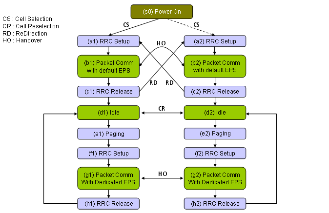
Note for Step 23)~32) : Intial Registration and Default EPS Bearer Setup procedure would be common to almost all LTE network. Of course, there would be a small variations but overall concept would be almost same. But the procedure after <Idle> (Step 23~32) would be quite different among Network Operators. Following would be two major variations.
The example test sequence in this case shows the second case,
Depending on which level you are working on in UE development/Test procedure, the amount of knowledge you need to know would be different. But I think there are a couple of big pictures that may help almost anybody working in full protocol stack.
First big picture I would like to introduce is the channel mapping as shown below. Just try to pick any RRC messages and try to follow the arrow for the message. If you read those pages about MAC and RLC, it will remind you of a lot of detailed information.
<< Overall Sequence and Layer Mapping >>
Following is a sequence diagram showing not only the message but also basic configurations of each layer. More detailed description of each layer in the context of full protocol stack will be explained in "Full Stack" section.
Just read through this sequence whenever you have time until you can duplicate the sequence without looking into this again. This can be a good framework for your study and good guide for troubleshooting.
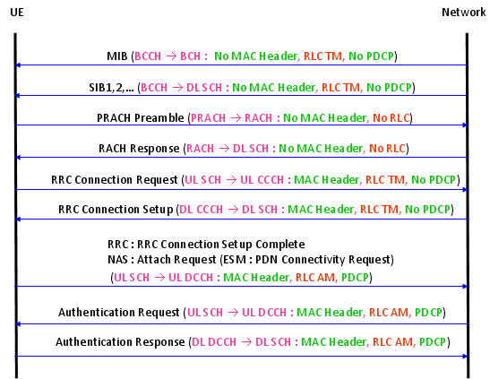 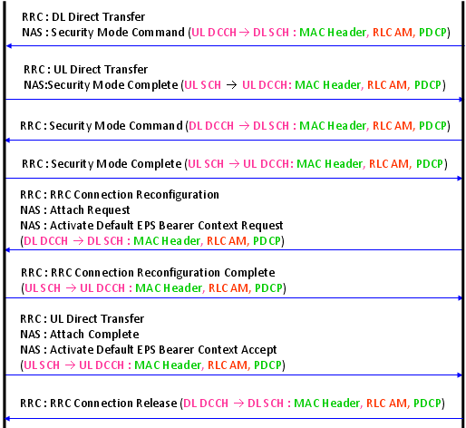
<< Downlink Channel Map >>
The diagram you saw above a kind of message flow(event diagram) in time sequence. The diagram shown below is not a time based, but it shows the channel mapping (or data flow across the full protocol stack). Pick one of the message from the diagram shown above and try to find right route for this digram and see how much details you can add. For example, if you picked the message "RRC Connection Setup", the start point would be "RRC Message msg4".
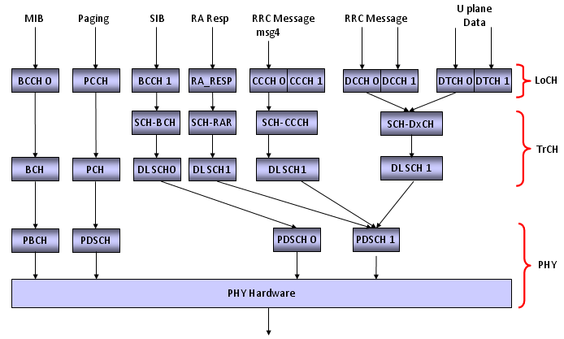
Following is a tabular presentation of DL Channel Map. (LCID and TrCH Number would be different depending on the network or Network Simulator)
<< Uplink Channel Map >> 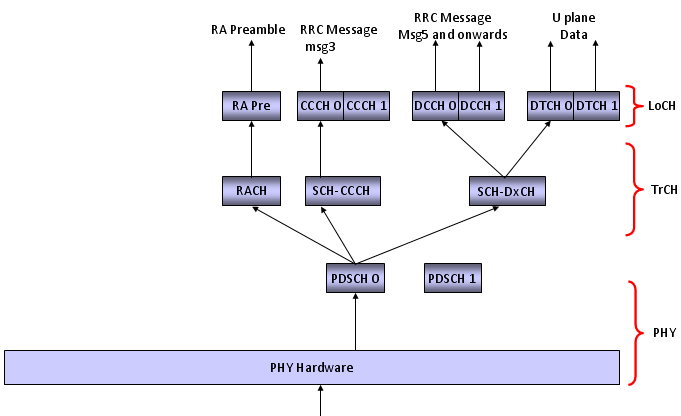
Following is a tabular presentation of DL Channel Map. (LCID and TrCH Number would be different depending on the network or Network Simulator)
Channel Mapping Table throughout Call Processing
This is only an example case and Mapping (especiall LoCH No) can vary depending on situations. The point is that it will be really helpful for your troubleshooting or test case creation if you create this kind of table for your case.
Note : Refer to TS 36.331 - 9.1.1 Logical channel configurations
Cell Configuration and Channel Configuration during Call Processing
Config 1) Activate Cell Physicall Layer 1) MIB Config 2) Activate PHY, MAC, RLC for SIB Transmission (BCCH-DL DSCH) 2) SIB 1 3) SIB 2 Config 3) Configure PHY, MAC for PRACH Reception and RACH Response Transmission 4) RRC : PRACH Preamble 5) RRC : RACH Response Config 3) Configure PHY, MAC, RLC for Msg3 (RRC Connection Request) Reception (UL-CCCH) 6) RRC : RRC Connection Request Config 4) Configure MAC, RLC, PDCH for DL DCCH, UL DCCH 7) RRC : RRC Connection Setup 8) RRC : RRC Connection Setup Complete + NAS : Attach Request + ESM : PDN Connectivity Request 9) RRC : DL Information Transfer + NAS : Authentication Request 10) RRC : UL Information Transfer + NAS : Authentication Response 11) RRC : DL Information Transfer + NAS : Security Mode Command 12) RRC : UL Information Transfer + NAS : Security Mode Complete Config 5) Configure PDCP for Integrity, Ciphering (We may disable Integiry/Ciphering for some test environment) 13) RRC : Security Mode Command 14) RRC : Security Mode Complete 15) RRC : RRC Connection Reconfiguration + NAS : Attach Accept + NAS : Activate Default EPS Bearer Context Req Config 6) Configure MAC, RLC, PDCP for DL/UL DTCH+DCCH 16) RRC : RRC Connection Reconfiguration Complete + NAS : Attach Complete + NAS : Activate Default EPS Bearer Context Accept 17) RRC : RRC Connection Release Config 7) Deactivate all the channels related to DCCH, DTCH
Config 8) Activate channels for PCCH < MO or MT call > : In MT call, Paging should be sent. Config 9) Configure PHY, MAC for PRACH Reception and RACH Response Transmission 18) RRC : PRACH Preamble 19) RRC : RACH Response Config 10) Configure PHY, MAC, RLC for Msg3 (RRC Connection Request) Reception (UL-CCCH) 20) RRC : RRC Connection Request Config 11) Configure MAC, RLC, PDCH for DL DCCH, UL DCCH 21) RRC : RRC Connection Setup 22) RRC : RRC Connection Setup Complete + NAS : Service Request 23) RRC : Security Mode Command 24) RRC : Security Mode Complete 25) RRC : RRC Connection Reconfiguration + NAS : Activate Dedicated EPS Bearer Context Request Config 12) Configure MAC, RLC, PDCP for DL/UL DTCH+DCCH 26) RRC : RRC Connection Reconfiguration Complete + NAS : Activate Dedicated EPS Bearer Context Accept 27) RRC : RRC Connection Release
Now the next step is to describe each of the steps in as much detail as possible. The more in detail you can describe, the easier the development, testing, troubleshooting will be. There are many steps I couldn't describe here because the most of steps not described here would be related to company confidentials (Of course, you can say "Every details are in 3GPP specification". Yes, that's true, but 3GPP says only about "What to do", it doesn't say much about "How to do". In real implementation, this "How to do" part is as important as "What to do") You can take this as a minimum of possible-detailed description. Going through this table, think about how much additional comments you think you can put in 'Memo' column. (If you want to see what's really happening in real network, see the live air example in Full Stack page)
Overall Comparision with WCDMA
Even though overall sequence is pretty similar to WCDMA sequence, there are a couple of different points comparing to WCDMA sequence.
First point you have to look at is that in LTE 'RACH Preamble' is sent as a part of MAC Layer process. As you know RACH process was there in WCDMA, but in WCDMA it was a part of Physical layer process.
Another part I notice is that RRC Connection Setup Complete and Attach Request is carried in a single step. This is only one example. In LTE, many of NAS Message is piggybacked on RRC Messages. This would make message decoding/encoding process complicated but it would be efficient to reduce the number of message exchange between UE and eNodeB.
These are the differences you can notice just by looking at the message type, there are more differences you will find when you go into the information elements of each messages as you will see in following sections.
Next thing you will notice would be that there are much less SIBs being transmitted in LTE comparting to WCDMA. Of course there are more SIBs not being transmitted in this sequence (LTE has 10 SIBs in total), but with only these two SIBs it can transmit all the information to let UE camp on the network. In WCDMA there are a total 18 SIBs and in most case we used at least SIB1,3,5,7,11 even in very basic configurations. And some of the WCDMA SIBs like SIB5 and 11 has multipe segments. In LTE, number of SIB is small and none of them are segmented.
MIB in LTE has very minimal information (This is a big difference from WCDMA MIB) . The only information it carries are
i) BandWidth ii) PHICH iii) SystemFrameNumber
Of course the most important information is "BandWidth".
According to 36.331 section 5.2.1.2, the MIB scheduling is as follows : The MIB uses a fixed schedule with a periodicity of 40 ms and repetitions made within 40 ms. The first transmission ofthe MIB is scheduled in subframe #0 of radio frames for which the SFN mod 4 = 0, and repetitions are scheduled insubframe #0 of all other radio frames.
SIB 1 in LTE contains the information like the ones in WCDMA MIB & SIB1 & SIB3. The important information on SIB 1 is
i) PLMN ii) Tracking Area Code iii) Cell Selection Info iv) Frequency Band Indicator v) Scheduling information (periodicity) of other SIBs
You may notice that LTE SIB1 is very similar to WCDMA MIB. Especially at initial test case development, you have to be very careful about item v). If you set this value incorrectly, all the other SIBs will not be decoded by UE. And as a result, UE would not recognize the cell and show "No Service" message.
According to 36.331 section 5.2.1.2, the SIB1 scheduling is as follows : The SystemInformationBlockType1 uses a fixed schedule with a periodicity of 80 ms and repetitions made within 80 ms.The first transmission of SystemInformationBlockType1 is scheduled in subframe #5 of radio frames for which the SFNmod 8 = 0, and repetitions are scheduled in subframe #5 of all other radio frames for which SFN mod 2 = 0.
This means that even though SIB1 periodicity is 80 ms, different copies (Redudancy version : RV) of the SIB1 is transmitted every 20ms. Meaning that at L3 you will see the SIB1 every 80 ms, but at PHY layer you will see it every 20ms. For the detailed RV assignment for each transmission, refer to 36.321 section 5.3.1 (the last part of the section)
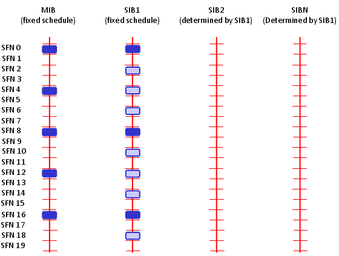
One example of LTE SIB1 is as follows :
RRC_LTE:BCCH-DL-SCH-Message BCCH-DL-SCH-Message ::= SEQUENCE +-message ::= CHOICE [c1] +-c1 ::= CHOICE [systemInformationBlockType1] +-systemInformationBlockType1 ::= SEQUENCE [000] +-cellAccessRelatedInfo ::= SEQUENCE [0] | +-plmn-IdentityList ::= SEQUENCE OF SIZE(1..6) [1] | | +-PLMN-IdentityInfo ::= SEQUENCE | | +-plmn-Identity ::= SEQUENCE [1] | | | +-mcc ::= SEQUENCE OF SIZE(3) OPTIONAL:Exist | | | | +-MCC-MNC-Digit ::= INTEGER (0..9) [0] | | | | +-MCC-MNC-Digit ::= INTEGER (0..9) [0] | | | | +-MCC-MNC-Digit ::= INTEGER (0..9) [1] | | | +-mnc ::= SEQUENCE OF SIZE(2..3) [2] | | | +-MCC-MNC-Digit ::= INTEGER (0..9) [0] | | | +-MCC-MNC-Digit ::= INTEGER (0..9) [1] | | +-cellReservedForOperatorUse ::= ENUMERATED [notReserved] | +-trackingAreaCode ::= BIT STRING SIZE(16) [0000000000000001] | +-cellIdentity ::= BIT STRING SIZE(28) [0000000000000000000100000000] | +-cellBarred ::= ENUMERATED [notBarred] | +-intraFreqReselection ::= ENUMERATED [notAllowed] | +-csg-Indication ::= BOOLEAN [FALSE] | +-csg-Identity ::= BIT STRING OPTIONAL:Omit +-cellSelectionInfo ::= SEQUENCE [0] | +-q-RxLevMin ::= INTEGER (-70..-22) [-53] | +-q-RxLevMinOffset ::= INTEGER OPTIONAL:Omit +-p-Max ::= INTEGER OPTIONAL:Omit +-freqBandIndicator ::= INTEGER (1..64) [7] +-schedulingInfoList ::= SEQUENCE OF SIZE(1..maxSI-Message[32]) [2] | +-SchedulingInfo ::= SEQUENCE | | +-si-Periodicity ::= ENUMERATED [rf8] | | +-sib-MappingInfo ::= SEQUENCE OF SIZE(0..maxSIB-1[31]) [0] | +-SchedulingInfo ::= SEQUENCE | +-si-Periodicity ::= ENUMERATED [rf8] | +-sib-MappingInfo ::= SEQUENCE OF SIZE(0..maxSIB-1[31]) [1] | +-SIB-Type ::= ENUMERATED [sibType3] +-tdd-Config ::= SEQUENCE OPTIONAL:Omit +-si-WindowLength ::= ENUMERATED [ms20] +-systemInfoValueTag ::= INTEGER (0..31) [0] +-nonCriticalExtension ::= SEQUENCE OPTIONAL:Omit
The important information on SIB2 is
i) RACH Configuration ii) bcch, pcch, pdsch, pusch, pucch configuration iii) sounding RS Configuration iv) UE Timers
I would say SIB2 is the most important SIB in LTE and you will look into this SIB most frequently when you are implementing protocol stack and troubleshooting, since it defines the characteristics of the most physical channels.
If you have some issues at registration process especially before 'RRC Connection Reconfiguration'. The first part you have to check is SIB2 and check if UE properly decoded this and properly configure UE according to SIB2. Sometimes only one parameter mismatch of SIB2 between Network and UE can make difference between success and failure of the whole registration process.
Following is one example of SIB2. I looks to me that LTE SIB2 is similar to WCDMA SIB5 configuring various common channel.
RRC_LTE:BCCH-DL-SCH-Message BCCH-DL-SCH-Message ::= SEQUENCE +-message ::= CHOICE [c1] +-c1 ::= CHOICE [systemInformation] +-systemInformation ::= SEQUENCE +-criticalExtensions ::= CHOICE [systemInformation-r8] +-systemInformation-r8 ::= SEQUENCE [0] +-sib-TypeAndInfo ::= SEQUENCE OF SIZE(1..maxSIB[32]) [1] | +- ::= CHOICE [sib2] | +-sib2 ::= SEQUENCE [00] | +-ac-BarringInfo ::= SEQUENCE OPTIONAL:Omit | +-radioResourceConfigCommon ::= SEQUENCE | | +-rach-Config ::= SEQUENCE | | | +-preambleInfo ::= SEQUENCE [0] | | | | +-numberOfRA-Preambles ::= ENUMERATED [n52] | | | | +-preamblesGroupAConfig ::= SEQUENCE OPTIONAL:Omit | | | +-powerRampingParameters ::= SEQUENCE | | | | +-powerRampingStep ::= ENUMERATED [dB2] | | | | +-preambleInitialReceivedTargetPower ::= ENUMERATED [dBm-104] | | | +-ra-SupervisionInfo ::= SEQUENCE | | | | +-preambleTransMax ::= ENUMERATED [n6] | | | | +-ra-ResponseWindowSize ::= ENUMERATED [sf10] | | | | +-mac-ContentionResolutionTimer ::= ENUMERATED [sf48] | | | +-maxHARQ-Msg3Tx ::= INTEGER (1..8) [4] | | +-bcch-Config ::= SEQUENCE | | | +-modificationPeriodCoeff ::= ENUMERATED [n4] | | +-pcch-Config ::= SEQUENCE | | | +-defaultPagingCycle ::= ENUMERATED [rf128] | | | +-nB ::= ENUMERATED [oneT] | | +-prach-Config ::= SEQUENCE | | | +-rootSequenceIndex ::= INTEGER (0..837) [22] | | | +-prach-ConfigInfo ::= SEQUENCE | | | +-prach-ConfigIndex ::= INTEGER (0..63) [3] | | | +-highSpeedFlag ::= BOOLEAN [FALSE] | | | +-zeroCorrelationZoneConfig ::= INTEGER (0..15) [5] | | | +-prach-FreqOffset ::= INTEGER (0..94) [2] | | +-pdsch-Config ::= SEQUENCE | | | +-referenceSignalPower ::= INTEGER (-60..50) [18] | | | +-p-b ::= INTEGER (0..3) [0] | | +-pusch-Config ::= SEQUENCE | | | +-pusch-ConfigBasic ::= SEQUENCE | | | | +-n-SB ::= INTEGER (1..4) [1] | | | | +-hoppingMode ::= ENUMERATED [interSubFrame] | | | | +-pusch-HoppingOffset ::= INTEGER (0..98) [4] | | | | +-enable64QAM ::= BOOLEAN [FALSE] | | | +-ul-ReferenceSignalsPUSCH ::= SEQUENCE | | | +-groupHoppingEnabled ::= BOOLEAN [TRUE] | | | +-groupAssignmentPUSCH ::= INTEGER (0..29) [0] | | | +-sequenceHoppingEnabled ::= BOOLEAN [FALSE] | | | +-cyclicShift ::= INTEGER (0..7) [0] | | +-pucch-Config ::= SEQUENCE | | | +-deltaPUCCH-Shift ::= ENUMERATED [ds2] | | | +-nRB-CQI ::= INTEGER (0..98) [2] | | | +-nCS-AN ::= INTEGER (0..7) [6] | | | +-n1PUCCH-AN ::= INTEGER (0..2047) [0] | | +-soundingRS-UL-Config ::= CHOICE [setup] | | | +-setup ::= SEQUENCE [0] | | | +-srs-BandwidthConfig ::= ENUMERATED [bw3] | | | +-srs-SubframeConfig ::= ENUMERATED [sc0] | | | +-ackNackSRS-SimultaneousTransmission ::= BOOLEAN [TRUE] | | | +-srs-MaxUpPts ::= ENUMERATED OPTIONAL:Omit | | +-uplinkPowerControl ::= SEQUENCE | | | +-p0-NominalPUSCH ::= INTEGER (-126..24) [-85] | | | +-alpha ::= ENUMERATED [al08] | | | +-p0-NominalPUCCH ::= INTEGER (-127..-96) [-117] | | | +-deltaFList-PUCCH ::= SEQUENCE | | | | +-deltaF-PUCCH-Format1 ::= ENUMERATED [deltaF0] | | | | +-deltaF-PUCCH-Format1b ::= ENUMERATED [deltaF3] | | | | +-deltaF-PUCCH-Format2 ::= ENUMERATED [deltaF0] | | | | +-deltaF-PUCCH-Format2a ::= ENUMERATED [deltaF0] | | | | +-deltaF-PUCCH-Format2b ::= ENUMERATED [deltaF0] | | | +-deltaPreambleMsg3 ::= INTEGER (-1..6) [4] | | +-ul-CyclicPrefixLength ::= ENUMERATED [len1] | +-ue-TimersAndConstants ::= SEQUENCE | | +-t300 ::= ENUMERATED [ms1000] | | +-t301 ::= ENUMERATED [ms1000] | | +-t310 ::= ENUMERATED [ms1000] | | +-n310 ::= ENUMERATED [n1] | | +-t311 ::= ENUMERATED [ms1000] | | +-n311 ::= ENUMERATED [n1] | +-freqInfo ::= SEQUENCE [00] | | +-ul-CarrierFreq ::= INTEGER OPTIONAL:Omit | | +-ul-Bandwidth ::= ENUMERATED OPTIONAL:Omit | | +-additionalSpectrumEmission ::= INTEGER (1..32) [1] | +-mbsfn-SubframeConfigList ::= SEQUENCE OF OPTIONAL:Omit | +-timeAlignmentTimerCommon ::= ENUMERATED [sf750] +-nonCriticalExtension ::= SEQUENCE OPTIONAL:Omit
RRC : PRACH Preamble / RRC : RACH Response
I think this two steps can be best summerized by the following diagram. For the details, refer to http://www.sharetechnote.com/html/RACH_LTE.html
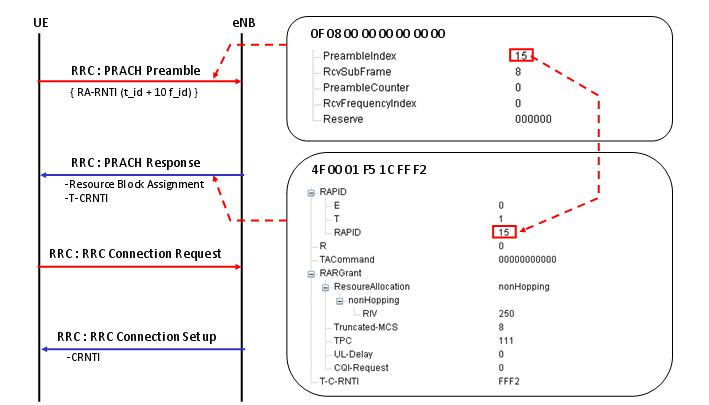
From this point on, the L3 message carries both RRC and NAS messages. So you need to have overall understanding of NAS messages as well as RRC messages. You need to understand all the details of TS 29.274 to handle to handle data traffic related IEs in NAS message. Of course it would be impossible to understand all those details within a day.. my approach is to go through following tables as often as possible until I get some big picture in my mind. You may have to go back and forth between 36.331 and 29.274.
* Table 7.2.2-1: Information Elements in a Create Session Response * Table 7.2.3-1: Information Elements in a Create Bearer Request * Table 7.2.3-2: Bearer Context within Create Bearer Request * Table 7.2.5-1: Information Elements in a Bearer Resource Command * Table 7.2.7-1: Information Elements in a Modify Bearer Request * Table 7.2.8-1: Information Elements in a Modify Bearer Response * Table 7.2.9.1-1: Information Elements in a Delete Session Request * Table 7.2.9.2-1: Information Elements in a Delete Bearer Request * Table 7.2.10.2-1: Information Elements in Delete Bearer Response * Table 7.3.5-1: Information Elements in a Context Request * Table 7.3.6-2: MME/SGSN UE EPS PDN Connections within Context Response * Table 7.3.8-1: Information Elements in an Identification Request
'RRC Connection Request' and 'RRC Connection Setup' procedure can be summerized as in following diagram. For the details, refer to http://www.sharetechnote.com/html/RACH_LTE.html (The message contents shown in the box is only an example. The HEX arrays you would see on your device and network would be different from what you see here. But overall structure should be similar to this)
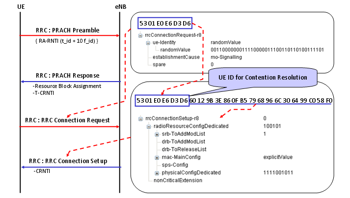
Note : This example shows the case where Contention Resolution and RRC Connection Setup is being transmitted at a single step, but it is also possible that Contention Resolution and RRC Connection Setup message is transmitted as two separate process.
As you see in the following diagram, the most important IE (infomration element) in RRC Connection Setup message is "RadioResourceConfigDedicated" under which you can setup SRB, DRB, MAC and PHY config. Even thouth there is IEs related to DRB, in most case we setup only SRBs in RRC Connection Setup. It is similar to WCDMA RRC Connection setup message in which you usually setup only SRB (Control Channel Part) even though there is IEs for RB(Data Traffic).
One thing you have to notice is that you will find "RadioResourceCondigDedicated" IE not only in RRC Connection Setup message but also in RRC Connection Reconfiguration message. In that case, you have to be careful so that the one you set in RRC Connection Reconfig message properly match the one you set in RRC Connection Setup message. It means that you have to understand the correlation very clearly between RRC Connection Setup message and RRC Connection Reconfig message. This is also very similar to WCDMA case.
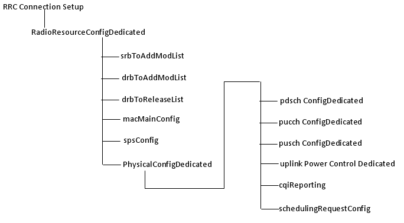
One example of RRC Connection Setup is as follows. As you see the contents below, main purpose of RRC Connection Setup message is to specify the MAC/RLC/PHY setup for SRB 0 and SRB 1 bearer. So if you make any mistake in this message, Network or UE will fail to decode messages that comes after this message.
Especially you have to be very careful about PhysicalConfigDedicated part. If you see one of the following issues after 'RRC Connection Setup', the first thing you have to check is PhysicalConfigDedicated. (You have to check all the detailed parameter and make it sure that UE properly decoded those information and properly configure itself according to the contents). i) CRC Error for PUSCH ii) UE log shows it transmit PUSCH, but Network log shows no PUSCH, not even CRC error
DL-CCCH-Message ::= SEQUENCE +-message ::= CHOICE [c1] +-c1 ::= CHOICE [rrcConnectionSetup] +-rrcConnectionSetup ::= SEQUENCE +-rrc-TransactionIdentifier ::= INTEGER (0..3) [0] +-criticalExtensions ::= CHOICE [c1] +-c1 ::= CHOICE [rrcConnectionSetup-r8] +-rrcConnectionSetup-r8 ::= SEQUENCE [0] +-radioResourceConfigDedicated ::= SEQUENCE [100101] | +-srb-ToAddModList ::= SEQUENCE OF SIZE(1..2) [1] OPTIONAL:Exist | | +-SRB-ToAddMod ::= SEQUENCE [11] | | +-srb-Identity ::= INTEGER (1..2) [1] | | +-rlc-Config ::= CHOICE [defaultValue] OPTIONAL:Exist | | | +-defaultValue ::= NULL | | +-logicalChannelConfig ::= CHOICE [defaultValue] OPTIONAL:Exist | | +-defaultValue ::= NULL | +-drb-ToAddModList ::= SEQUENCE OF OPTIONAL:Omit | +-drb-ToReleaseList ::= SEQUENCE OF OPTIONAL:Omit | +-mac-MainConfig ::= CHOICE [explicitValue] OPTIONAL:Exist | | +-explicitValue ::= SEQUENCE [111] | | +-ul-SCH-Config ::= SEQUENCE [11] OPTIONAL:Exist | | | +-maxHARQ-Tx ::= ENUMERATED [n5] OPTIONAL:Exist | | | +-periodicBSR-Timer ::= ENUMERATED [sf20] OPTIONAL:Exist | | | +-retxBSR-Timer ::= ENUMERATED [sf320] | | | +-ttiBundling ::= BOOLEAN [FALSE] | | +-drx-Config ::= CHOICE [release] OPTIONAL:Exist | | | +-release ::= NULL | | +-timeAlignmentTimerDedicated ::= ENUMERATED [infinity] | | +-phr-Config ::= CHOICE [setup] OPTIONAL:Exist | | +-setup ::= SEQUENCE | | +-periodicPHR-Timer ::= ENUMERATED [sf500] | | +-prohibitPHR-Timer ::= ENUMERATED [sf200] | | +-dl-PathlossChange ::= ENUMERATED [dB3] | +-sps-Config ::= SEQUENCE OPTIONAL:Omit | +-physicalConfigDedicated ::= SEQUENCE [1111001011] OPTIONAL:Exist | +-pdsch-ConfigDedicated ::= SEQUENCE OPTIONAL:Exist | | +-p-a ::= ENUMERATED [dB-3] | +-pucch-ConfigDedicated ::= SEQUENCE [0] OPTIONAL:Exist | | +-ackNackRepetition ::= CHOICE [release] | | | +-release ::= NULL | | +-tdd-AckNackFeedbackMode ::= ENUMERATED OPTIONAL:Omit | +-pusch-ConfigDedicated ::= SEQUENCE OPTIONAL:Exist | | +-betaOffset-ACK-Index ::= INTEGER (0..15) [9] | | +-betaOffset-RI-Index ::= INTEGER (0..15) [6] | | +-betaOffset-CQI-Index ::= INTEGER (0..15) [6] | +-uplinkPowerControlDedicated ::= SEQUENCE [1] OPTIONAL:Exist | | +-p0-UE-PUSCH ::= INTEGER (-8..7) [0] | | +-deltaMCS-Enabled ::= ENUMERATED [en0] | | +-accumulationEnabled ::= BOOLEAN [TRUE] | | +-p0-UE-PUCCH ::= INTEGER (-8..7) [0] | | +-pSRS-Offset ::= INTEGER (0..15) [3] | | +-filterCoefficient ::= ENUMERATED [fc4] OPTIONAL:Exist | +-tpc-PDCCH-ConfigPUCCH ::= CHOICE OPTIONAL:Omit | +-tpc-PDCCH-ConfigPUSCH ::= CHOICE OPTIONAL:Omit | +-cqi-ReportConfig ::= SEQUENCE [10] OPTIONAL:Exist | | +-cqi-ReportModeAperiodic ::= ENUMERATED [rm30] OPTIONAL:Exist | | +-nomPDSCH-RS-EPRE-Offset ::= INTEGER (-1..6) [0] | | +-cqi-ReportPeriodic ::= CHOICE OPTIONAL:Omit | +-soundingRS-UL-ConfigDedicated ::= CHOICE OPTIONAL:Omit | +-antennaInfo ::= CHOICE [defaultValue] OPTIONAL:Exist | | +-defaultValue ::= NULL | +-schedulingRequestConfig ::= CHOICE [setup] OPTIONAL:Exist | +-setup ::= SEQUENCE | +-sr-PUCCH-ResourceIndex ::= INTEGER (0..2047) [20] | +-sr-ConfigIndex ::= INTEGER (0..155) [30] | +-dsr-TransMax ::= ENUMERATED [n4] +-nonCriticalExtension ::= SEQUENCE OPTIONAL:Omit
< Note 1 > +-pdsch-ConfigDedicated ::= SEQUENCE OPTIONAL:Exist | +-p-a ::= ENUMERATED [dB-3] : transmission power is calculated according to Section 5.2 of 3GPP TS36.213 from the reference signal power and the values of the P_A and P_B parameters specified for this procedure. These parameters set the PDSCH transmission power differences between symbols with and without RS. Unproper settings for this value would cause large amount of CRC errors on PDSCH reception on UE side, resulting in a lot of HARQ NACK from UE.
< Note 2 > If you see SRB-ToAddMod IE, you would see a couple of Default Value. What does this mean ? Following two sections of 36.331 will give you the answer.
RRC : RRC Connection Setup Complete + NAS : Attach Request + ESM : PDN Connectivity Request
This step would be one of very important steps during the initial registration process mainly because UE send a lot of it's capability information (especailly NAS layer capability information) to the core network.
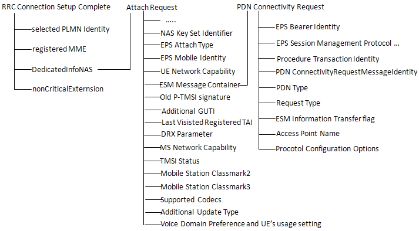
As you see this step carries two important NAS message as follows.
NAS : Attach Request : The most important information carried by this message would be UE capability in terms of ciphering and integrity. If you don't do proper following step (especially at Attach accept step) based on the information on this, UE will fail to registration. Even bigger problem is that the failure mode of registration varies depending UE protocol stack implementation. So in many case it is very hard to find the root cause of the problem.
ESM : PDN Connectivity Request : The most information of this message would be the protocol configuration options (PCO). From this you can figure out what kind of packet service UE support or want to get supported. If you don't properly handle this information, it will also result in registration failure and the failure mode would vary depending on UE implementation.
Attach request ::= DIVISION +-Security header type ::= V | +-Security header type ::= CHOICE [Plain NAS message, not security protected] +-EPS mobility management protocol discriminator ::= V | +-Protocol discriminator ::= PD [7] +-Attach request message identity ::= V | +-Message type ::= MSG [41] +-NAS key set identifier ::= V | +-TSC ::= CHOICE [native security context (for KSI ASME)] | +-NAS key set identifier ::= CHOICE [possible values for the NAS key set identifier 1] +-EPS attach type ::= V | +-Spare ::= FIX [0] | +-EPS attach type value ::= CHOICE [EPS attach] +-Old GUTI or IMSI ::= LV | +-Octet1 ::= DIVISION | | +-Length of EPS mobile identity contents ::= LEN (0..255) [11] | +-Octet2 ::= DIVISION | | +-Spare ::= FIX [F] | | +-Odd/even indication ::= CHOICE [even number of identity digits and also when the GUTI is used] | | +-Type of identity ::= CHOICE [GUTI] | +-Octet3 ::= DIVISION | | +-MCC digit 2 ::= INT (0..15) [0] | | +-MCC digit 1 ::= INT (0..15) [0] | +-Octet4 ::= DIVISION | | +-MNC digit 3 ::= INT (0..15) [15] | | +-MCC digit 3 ::= INT (0..15) [1] | +-Octet5 ::= DIVISION | | +-MNC digit 2 ::= INT (0..15) [1] | | +-MNC digit 1 ::= INT (0..15) [0] | +-Octet6 ::= DIVISION | | +-MME Group ID ::= INT (0..255) [0] | +-Octet7 ::= DIVISION | | +-MME Group ID(continued) ::= INT (0..255) [1] | +-Octet8 ::= DIVISION | | +-MME Code ::= INT (0..255) [1] | +-Octet9 ::= DIVISION | | +-M-TMSI ::= INT (0..255) [18] | +-Octet10 ::= DIVISION | | +-M-TMSI(continued) ::= INT (0..255) [52] | +-Octet11 ::= DIVISION | | +-M-TMSI(continued) ::= INT (0..255) [86] | +-Octet12 ::= DIVISION | +-M-TMSI(continued) ::= INT (0..255) [120] +-UE network capability ::= LV | +-Octet1 ::= DIVISION | | +-Length of UE network capability contents ::= LEN (0..255) [2] | +-Octet2 ::= DIVISION | | +-EEA0 ::= CHOICE [EPS encryption algorithm EEA0 supported] | | +-128-EEA1 ::= CHOICE [EPS encryption algorithm 128-EEA1 supported] | | +-128-EEA2 ::= CHOICE [EPS encryption algorithm 128-EEA2 supported] | | +-EEA3 ::= CHOICE [EPS encryption algorithm EEA3 not supported] | | +-EEA4 ::= CHOICE [EPS encryption algorithm EEA4 not supported] | | +-EEA5 ::= CHOICE [EPS encryption algorithm EEA5 not supported] | | +-EEA6 ::= CHOICE [EPS encryption algorithm EEA6 not supported] | | +-EEA7 ::= CHOICE [EPS encryption algorithm EEA7 not supported] | +-Octet3 ::= DIVISION | | +-spare ::= FIX [0] | | +-128-EIA1 ::= CHOICE [EPS integrity algorithm 128-EIA1 supported] | | +-128-EIA2 ::= CHOICE [EPS integrity algorithm 128-EIA2 supported] | | +-EIA3 ::= CHOICE [EPS integrity algorithm EIA3 not supported] | | +-EIA4 ::= CHOICE [EPS integrity algorithm EIA4 not supported] | | +-EIA5 ::= CHOICE [EPS integrity algorithm EIA5 not supported] | | +-EIA6 ::= CHOICE [EPS integrity algorithm EIA6 not supported] | | +-EIA7 ::= CHOICE [EPS integrity algorithm EIA7 not supported] | +-Octet4 ::= DIVISION | | +-UEA0 ::= CHOICE [UMTS encryption algorithm UEA0 not supported] | | +-UEA1 ::= CHOICE [UMTS encryption algorithm UEA1 not supported] | | +-UEA2 ::= CHOICE [UMTS encryption algorithm UEA2 not supported] | | +-UEA3 ::= CHOICE [UMTS encryption algorithm UEA3 not supported] | | +-UEA4 ::= CHOICE [UMTS encryption algorithm UEA4 not supported] | | +-UEA5 ::= CHOICE [UMTS encryption algorithm UEA5 not supported] | | +-UEA6 ::= CHOICE [UMTS encryption algorithm UEA6 not supported] | | +-UEA7 ::= CHOICE [UMTS encryption algorithm UEA7 not supported] | +-Octet5 ::= DIVISION | | +-UCS2 ::= CHOICE [The UE has a preference for the default alphabet (defined in 3GPP TS 23.038 [3]) over UCS2 (see ISO/IEC 10646 [29])] | | +-UIA1 ::= CHOICE [UMTS integrity algorithm UIA1 not supported] | | +-UIA2 ::= CHOICE [UMTS integrity algorithm UIA2 not supported] | | +-UIA3 ::= CHOICE [UMTS integrity algorithm UIA3 not supported] | | +-UIA4 ::= CHOICE [UMTS integrity algorithm UIA4 not supported] | | +-UIA5 ::= CHOICE [UMTS integrity algorithm UIA5 not supported] | | +-UIA6 ::= CHOICE [UMTS integrity algorithm UIA6 not supported] | | +-UIA7 ::= CHOICE [UMTS integrity algorithm UIA7 not supported] | +-Octet6 ::= DIVISION | | +-spare ::= FIX [0] | | +-1xSRVCC ::= CHOICE [SRVCC from E-UTRAN to cdma2000 1xCS not supported] | | +-spare ::= FIX [0] | +-Octet7-14 ::= DIVISION | +-Spare ::= OCTETARRAY SIZE(0..8) [00] +-ESM message container ::= LV-E | +-Octet1-Octet2 ::= DIVISION | | +-Length of ESM message container ::= LEN (0..65535) [23] | +-Octet3- ::= DIVISION | +-ESM message container contents ::= OCTETARRAY SIZE(0..65535) [0201D031D1271080000100000300000A00000C00000D00] +-Old P-TMSI signature ::= TV OPTIONAL:Omit | +-Octet1 ::= DIVISION | | +-P-TMSI signature IEI ::= IEI [19] | +-Octet2-4 ::= DIVISION | +-P-TMSI signature value ::= INT (0..16777215) [0] +-Additional GUTI ::= TLV OPTIONAL:Omit | +-Octet1 ::= DIVISION | | +-EPS mobile identity IEI ::= IEI [50] | +-Octet2 ::= DIVISION | | +-Length of mobile identity IEI ::= LEN (0..255) [1] | +-Octet3 ::= DIVISION | | +-Identity digit 1 ::= INT (0..15) [0] | | +-Odd/even indication ::= CHOICE [even number of identity digits and also when the GUTI is used] | | +-Type of identity ::= CHOICE [IMSI] | +-Octet4 ::= DIVISION | +-Identity digit p ::= OCTETARRAY SIZE(0..10) +-Last visited registered TAI ::= TV OPTIONAL:Exist | +-Octet1 ::= DIVISION | | +-Tracking area identity IEI ::= IEI [52] | +-Octet2 ::= DIVISION | | +-MCC digit 2 ::= INT (0..15) [1] | | +-MCC digit 1 ::= INT (0..15) [3] | +-Octet3 ::= DIVISION | | +-MNC digit 3 ::= INT (0..15) [0] | | +-MCC digit 3 ::= INT (0..15) [1] | +-Octet4 ::= DIVISION | | +-MNC digit 2 ::= INT (0..15) [8] | | +-MNC digit 1 ::= INT (0..15) [4] | +-Octet5 ::= DIVISION | | +-TAC ::= INT (0..255) [0] | +-Octet6 ::= DIVISION | +-TAC(continued) ::= INT (0..255) [1] +-DRX parameter ::= TV OPTIONAL:Omit +-MS network capability ::= TLV OPTIONAL:Omit +-Old location area identification ::= TV OPTIONAL:Omit +-TMSI status ::= TV OPTIONAL:Omit +-Mobile Station Classmark 2 ::= TLV OPTIONAL:Omit +-Mobile Station Classmark 3 ::= TLV OPTIONAL:Omit +-Supported Codecs ::= TLV OPTIONAL:Omit
If you decode the ESM message container contents part, you will get the following contents.
NAS_LTE:ESM,PDN connectivity request PDN connectivity request ::= DIVISION +-EPS bearer identity ::= V | +-EPS bearer identity value ::= CHOICE [No EPS bearer identity assigned] +-EPS session management protocol discriminator ::= V | +-Protocol discriminator ::= PD [2] +-Procedure transaction identity ::= V | +-Procedure transaction identity ::= CHOICE [Procedure transaction identity value 1] +-PDN connectivity request message identity ::= V | +-Message type ::= MSG [D0] +-PDN type ::= V | +-spare ::= FIX [0] | +-PDN type value ::= CHOICE [IPv4v6] +-Request type ::= V | +-Spare ::= FIX [0] | +-Request type value ::= CHOICE [initial request] +-ESM information transfer flag ::= TV OPTIONAL:Exist | +-Octet1 ::= DIVISION | +-ESM information transfer flag IEI ::= IEI [D-] | +-spare ::= FIX [0] | +-EIT value ::= CHOICE [security protected ESM information transfer required] +-Access point name ::= TLV OPTIONAL:Omit | +-Octet1 ::= DIVISION | | +-Access point name IEI ::= IEI [28] | +-Octet2 ::= DIVISION | | +-Length of access point name contents ::= LEN (0..255) [0] | +-Octet3-Octet102 ::= DIVISION | +-Access point name value ::= OCTETARRAY SIZE(0..100) +-Protocol configuration options ::= TLV OPTIONAL:Exist +-Octet1 ::= DIVISION | +-Protocol configuration options IEI ::= IEI [27] +-Octet2 ::= DIVISION | +-Length of protocol config options contents ::= LEN (0..255) [16] +-Octet3 ::= DIVISION | +-ext ::= EXT1 [1] | +-spare ::= FIX [0] | +-Configuration protocol ::= CHOICE [PPP for use with IP PDP type] +-Octet4-Octet253 ::= DIVISION +-protocol config options contents ::= OCTETARRAY SIZE(0..250) [000100000300000A00000C00000D00]
There are couple of important information in this message as described below.
ESM information transfer flag : According to Step 9a1 of Table 4.5.2.3-1: UE registration procedure (state 1 to state 2) of 36.508, Network has to go through ESM : Information Request as described below.
IF the UE sets the ESM information transfer flag in the last PDN CONNECTIVITY REQUEST message THEN the SS transmits an ESM INFORMATION REQUEST message to initiate exchange of protocol configuration options and/or APN
PDN Type : specifies IP version that the UE wants to use for EPS Bearer and Network may or may not use the same IP version in Default (or Dedicated) EPS Bearer Context Request. Some UE would accept whatever IP version is specified by the network at EPS Bearer establishment step, but some UE fail to setup EPS bearer if the IP version Network specify in Default (or Dedicated) EPS Bearer Context Request does not match the PDN type in this message.
Access Point Name : UE shows many different behavior related to this APN name. Followings are some of the behavior that I observed from a couple of difference devices. i) UE does not specify any APN here and accept whatever Network specifies in Activate Default EPS Bearer Context Request. ii) UE specify a specific APN here, but it accept whatever Network specifies in Activate Default EPS Bearer Context Request. iii) UE specify a specific APN here, but it reject the APN that Network specifies in Activate Default EPS Bearer Context Request if it is different from what UE specified here.
Protocol Configuration Options : You can get the detailed information from this protocol config options contents from TS24_008 10.5.6.3 Protocol configuration options which can be summarized as follows.
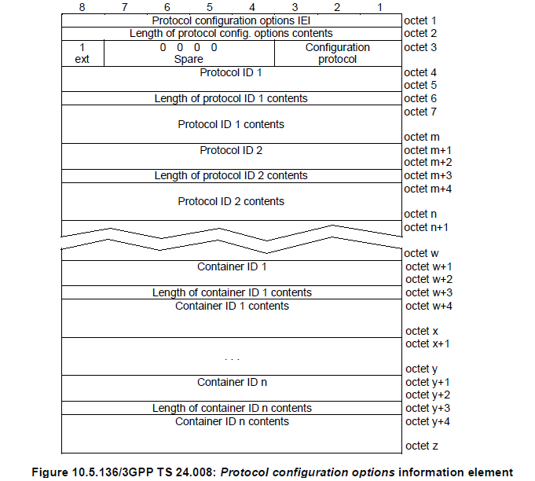
RRC : DL Information Transfer + NAS : Authentication Request RRC : UL Information Transfer + NAS : Authentication Response
"Authentication" process is a process similar to 'log in' process when you use a computer. In C2K and GSM, this authentication process is 'uni-directional', meaning that only Network authenticate UE and UE does not authenticate the network. As you may easily guess, this would cause a serious security problem. If I make a fake network which accept any UE, I can cheat a UE to camp on the fake network rather than the one the UE is supposed to camp on to. (But this kind of 'uni directional' authentication would make it so easy to test a UE using network simulator -:)
To improve this security issues, in LTE (in WCDMA as well) they do 'bi-directional' authentication, meaning that UE has to pass the authentication process and Newtork also has to pass the process as well.
The overall authentication process is as follows.
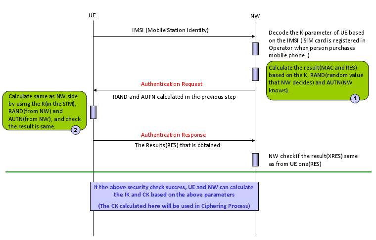
There are three main components of this authentication process : i) Input Parameters ii) Authentication Algorithm iii) Output Values (calcuated by Authentication Algorithm using the Input Parameters).
Both UE and Network uses the same Input Parameters and the same Authentication Algorithms, so they both should produce the same Output Values, otherwise Authentication fails.
One thing you have to keep in mind is that UE and Network exchange only Input Parameters and Output values, not the authentication Algorithm. Authentication Algorithm on UE side is stored in USIM and Authentication Algorithm on NW side is stored in Authentication Center. Both UE and NW just assume that they would use the identical algorithms.
Normally use use diffent Authentication Algorithm for testing and for live network. The most commonly used algorithm for testing is what we often call "Dummy XOR" algorithm which is defined in 36.508 section 4.9 Common test USIM parameters for LTE and 34.408 section 8 Test USIM Parameters for WCDMA.
The most common used algorithm in live network (as far as I know) is Milenage algorithm.
One example of Authentication Request and Authentication Response is as follows. You would notice that RAND, AUTN are carried by Authentication Request message and RES value is carried by Authentication Response.
NAS_LTE:EMM,Authentication request Authentication request ::= DIVISION +-Security header type ::= V | +-Security header type ::= CHOICE [Plain NAS message, not security protected] +-EPS mobility management protocol discriminator ::= V | +-Protocol discriminator ::= PD [7] +-Authentication request message type ::= V | +-Message type ::= MSG [52] +-Spare half octet ::= V | +-Spare half octet ::= FIX [0] +-NAS key set identifier ASME ::= V | +-TSC ::= CHOICE [native security context (for KSI ASME)] | +-NAS key set identifier ::= CHOICE [possible values for the NAS key set identifier 0] +-Authentication parameter RAND ::= V | +-Octet1-Octet16 ::= DIVISION | +-RAND value ::= OCTETARRAY SIZE(16..16) [A3DE0C6D363E30C364A4078F1BF8D577] +-Authentication parameter AUTN ::= LV +-Octet1 ::= DIVISION | +-Length of AUTN contents ::= LEN (0..255) [16] +-Octet2-Octet17 ::= DIVISION +-AUTN ::= OCTETARRAY SIZE(0..16) [5E726B56B4EC9001A3CF2E5E726BC6B5]
NAS_LTE:EMM,Authentication response Authentication response ::= DIVISION +-Security header type ::= V | +-Security header type ::= CHOICE [Plain NAS message, not security protected] +-EPS mobility management protocol discriminator ::= V | +-Protocol discriminator ::= PD [7] +-Authentication response message identity ::= V | +-Message type ::= MSG [53] +-Authentication response parameter ::= LV +-Octet1 ::= DIVISION | +-Length of Authentication response parameter contents ::= LEN (0..255) [8] +-Octet2-17 ::= DIVISION +-RES ::= OCTETARRAY SIZE(0..16) [A3CF2E5E726B56B4]
RRC : DL Information Transfer + NAS : Security Mode Command
Security Mode Command message to inform the UE of the following information (instructions). i) I (Newtork) am capable of these kinds of ciphering (encryption) algorithms ii) I (Newtork) am capable of these kinds of integrity algorithms iii) Among those ciphering algorithm which I am capable of, I will be using "this specific algorithm" for the communication with you (UE). iv) Among those integrity algorithm which I am capable of, I will be using "this specific algorithm" for the communication with you (UE)
In LTE, they are using separate Security Mode process for NAS and RRC, whereas in WCDMA only one security mode process (RRC only) was used (NAS is indirectly protected since NAS message was embedded in RRC and protected as a part of RRC message). The part marked in blue is for item i) and ii) listed above and the part marked in red is for item iii) and iv).
NAS_LTE:EMM,Security mode command Security mode command ::= DIVISION +-Security header type ::= V | +-Security header type ::= CHOICE [Plain NAS message, not security protected] +-EPS mobility management protocol discriminator ::= V | +-Protocol discriminator ::= PD [7] +-Security mode command message identity ::= V | +-Message type ::= MSG [5D] +-Selected NAS security algorithms ::= V | +-Octet1 ::= DIVISION | +-spare ::= FIX [0] | +-Type of ciphering algorithm ::= CHOICE [EPS encryption algorithm EEA0(ciphering not used)] | +-spare ::= FIX [0] | +-Type of integrity protection algorithm ::= CHOICE [Reserved 0] +-Spare half octet ::= V | +-Spare half octet ::= FIX [0] +-NAS key set identifier ::= V | +-TSC ::= CHOICE [native security context (for KSI ASME)] | +-NAS key set identifier ::= CHOICE [possible values for the NAS key set identifier 0] +-Replayed UE security capabilities ::= LV | +-Octet1 ::= DIVISION | | +-Length of UE security capability contents ::= LEN (0..255) [2] | +-Octet2 ::= DIVISION | | +-EEA0 ::= CHOICE [EPS encryption algorithm EEA0 supported] | | +-128-EEA1 ::= CHOICE [EPS encryption algorithm 128-EEA1 supported] | | +-128-EEA2 ::= CHOICE [EPS encryption algorithm 128-EEA2 supported] | | +-EEA3 ::= CHOICE [EPS encryption algorithm EEA3 not supported] | | +-EEA4 ::= CHOICE [EPS encryption algorithm EEA4 not supported] | | +-EEA5 ::= CHOICE [EPS encryption algorithm EEA5 not supported] | | +-EEA6 ::= CHOICE [EPS encryption algorithm EEA6 not supported] | | +-EEA7 ::= CHOICE [EPS encryption algorithm EEA7 not supported] | +-Octet3 ::= DIVISION | | +-spare ::= FIX [1] | | +-128-EIA1 ::= CHOICE [EPS integrity algorithm 128-EIA1 supported] | | +-128-EIA2 ::= CHOICE [EPS integrity algorithm 128-EIA2 supported] | | +-EIA3 ::= CHOICE [EPS integrity algorithm EIA3 not supported] | | +-EIA4 ::= CHOICE [EPS integrity algorithm EIA4 not supported] | | +-EIA5 ::= CHOICE [EPS integrity algorithm EIA5 not supported] | | +-EIA6 ::= CHOICE [EPS integrity algorithm EIA6 not supported] | | +-EIA7 ::= CHOICE [EPS integrity algorithm EIA7 not supported] | +-Octet4 ::= DIVISION | | +-UEA0 ::= CHOICE [UMTS encryption algorithm UEA0 not supported] | | +-UEA1 ::= CHOICE [UMTS encryption algorithm UEA1 not supported] | | +-UEA2 ::= CHOICE [UMTS encryption algorithm UEA2 not supported] | | +-UEA3 ::= CHOICE [UMTS encryption algorithm UEA3 not supported] | | +-UEA4 ::= CHOICE [UMTS encryption algorithm UEA4 not supported] | | +-UEA5 ::= CHOICE [UMTS encryption algorithm UEA5 not supported] | | +-UEA6 ::= CHOICE [UMTS encryption algorithm UEA6 not supported] | | +-UEA7 ::= CHOICE [UMTS encryption algorithm UEA7 not supported] | +-Octet5 ::= DIVISION | | +-spare ::= FIX [0] | | +-UIA1 ::= CHOICE [UMTS integrity algorithm UIA1 not supported] | | +-UIA2 ::= CHOICE [UMTS integrity algorithm UIA2 not supported] | | +-UIA3 ::= CHOICE [UMTS integrity algorithm UIA3 not supported] | | +-UIA4 ::= CHOICE [UMTS integrity algorithm UIA4 not supported] | | +-UIA5 ::= CHOICE [UMTS integrity algorithm UIA5 not supported] | | +-UIA6 ::= CHOICE [UMTS integrity algorithm UIA6 not supported] | | +-UIA7 ::= CHOICE [UMTS integrity algorithm UIA7 not supported] | +-Octet6 ::= DIVISION | +-spare ::= FIX [0] | +-GEA1 ::= CHOICE [GPRS encryption algorithm GEA1 not supported] | +-GEA2 ::= CHOICE [GPRS encryption algorithm GEA2 not supported] | +-GEA3 ::= CHOICE [GPRS encryption algorithm GEA3 not supported] | +-GEA4 ::= CHOICE [GPRS encryption algorithm GEA4 not supported] | +-GEA5 ::= CHOICE [GPRS encryption algorithm GEA5 not supported] | +-GEA6 ::= CHOICE [GPRS encryption algorithm GEA6 not supported] | +-GEA7 ::= CHOICE [GPRS encryption algorithm GEA7 not supported] +-IMEISV request ::= TV OPTIONAL:Omit | +-Octet1 ::= DIVISION | +-IMEISV request IEI ::= IEI [C-] | +-spare ::= FIX [0] | +-IMEISV request value ::= CHOICE [IMEISV not requested] +-Replayed nonce UE ::= TV OPTIONAL:Omit | +-Octet1 ::= DIVISION | | +-Nonce IEI ::= IEI [55] | +-Octet2-Octet5 ::= DIVISION | +-Nonce value ::= OCTETARRAY SIZE(4..4) [00000000] +-Nonce MME ::= TV OPTIONAL:Omit +-Octet1 ::= DIVISION | +-Nonce IEI ::= IEI [56] +-Octet2-Octet5 ::= DIVISION +-Nonce value ::= OCTETARRAY SIZE(4..4) [00000000]
RRC : UL Information Transfer + NAS : Security Mode Complete
Security Mode Complete is the answer to "Security Mode Command" message, so it is simple. If UE is also capable of the Integrity, Security algorithm that NW want to use, it send 'Security Mode Complete', if UE is not capable of them, it send 'Security Mode Failure'.
NAS_LTE:EMM,Security mode complete Security mode complete ::= DIVISION +-Security header type ::= V | +-Security header type ::= CHOICE [Plain NAS message, not security protected] +-EPS mobility management protocol discriminator ::= V | +-Protocol discriminator ::= PD [7] +-Security mode complete message identity ::= V | +-Message type ::= MSG [5E] +-IMEISV ::= TLV OPTIONAL:Omit +-Octet1 ::= DIVISION | +-Mobile Identity IEI ::= IEI [23] +-Octet2 ::= DIVISION | +-Length of mobile identity contents ::= LEN (0..255) [0] +-Octet3 ::= DIVISION | +-Identity digit 1 ::= INT (0..15) [0] | +-Odd/even indication ::= CHOICE [even number of identity digits and also when the TMSI/P-TMSI is used] | +-Type of identity ::= CHOICE [No Identity] +-Octet4-Octet11 ::= DIVISION +-Identity digit p ::= OCTETARRAY SIZE(0..8)
This is the same step as NAS:Security Mode Command, the only difference is that this is only for RRC message.
RRC_LTE:DL-DCCH-Message DL-DCCH-Message ::= SEQUENCE +-message ::= CHOICE [c1] +-c1 ::= CHOICE [securityModeCommand] +-securityModeCommand ::= SEQUENCE +-rrc-TransactionIdentifier ::= INTEGER (0..3) [0] +-criticalExtensions ::= CHOICE [c1] +-c1 ::= CHOICE [securityModeCommand-r8] +-securityModeCommand-r8 ::= SEQUENCE [0] +-securityConfigSMC ::= SEQUENCE | +-securityAlgorithmConfig ::= SEQUENCE | +-cipheringAlgorithm ::= ENUMERATED [eea1] | +-integrityProtAlgorithm ::= ENUMERATED [eia1] +-nonCriticalExtension ::= SEQUENCE OPTIONAL:Omit
Security Mode Complete is the answer to "Security Mode Command" message, so it is simple. If UE is also capable of the Integrity, Security algorithm that NW want to use, it send 'Security Mode Complete', if UE is not capable of them, it send 'Security Mode Failure'.
UL-DCCH-Message ::= SEQUENCE +-message ::= CHOICE [c1] +-c1 ::= CHOICE [securityModeComplete] +-securityModeComplete ::= SEQUENCE +-rrc-TransactionIdentifier ::= INTEGER (0..3) [0] +-criticalExtensions ::= CHOICE [securityModeComplete-r8] +-securityModeComplete-r8 ::= SEQUENCE [0] +-nonCriticalExtension ::= SEQUENCE OPTIONAL:Omit
RRC : RRC Connection Reconfiguration + NAS : Attach Accept + NAS : Activate Default EPS Bearer Context Request
An important procedure done in this step is "ESM : Activate Default EPS Bearer Context Request".
One thing you notice here is that in LTE Packet call is initiated by Network where as in UMST most of the packet call is initiated by UE. Network specifies an IP for the UE here.
If you have any experience with WCDMA protocol, you may take this message to be similar to 'Radio Bearer Setup' + 'Attach Accept' + Activate PDP Context Accept. At this step, UE gets an IP from the network and this IP does not get returned to Network even after 'RRC connection Release' and UE gets into IDLE mode.
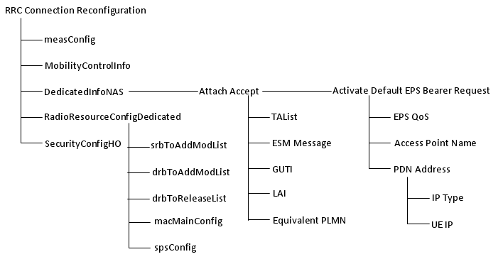
An example of RRC Connection Reconfiguration is as follows. Don't try to look into all the details since this message is one of the most complicated message in LTE. Just try to understand overall structure and compare the tree map shown above and the real messages shown below. Probably it will take several month to understand all the details of these elements, so don't be so hurry. Whenever you study a little bit further details of the topics in the tree diagram shown above, open up this section and see the details under the topics you studied. If you fully understand all the information elements shown below, you can say you mastered the LTE. Again don't try to understand all of these at once. It will just raise your blood pressure. Just look through these items as often as possible and get familiar with the overall structure first.
DL-DCCH-Message ::= SEQUENCE +-message ::= CHOICE [c1] +-c1 ::= CHOICE [rrcConnectionReconfiguration] +-rrcConnectionReconfiguration ::= SEQUENCE +-rrc-TransactionIdentifier ::= INTEGER (0..3) [0] +-criticalExtensions ::= CHOICE [c1] +-c1 ::= CHOICE [rrcConnectionReconfiguration-r8] +-rrcConnectionReconfiguration-r8 ::= SEQUENCE [001100] +-measConfig ::= SEQUENCE OPTIONAL:Omit +-mobilityControlInfo ::= SEQUENCE OPTIONAL:Omit +-dedicatedInfoNASList ::= SEQUENCE OF SIZE(1..maxDRB[11]) [1] OPTIONAL:Exist | +-DedicatedInfoNAS ::= OCTET STRING SIZE(ALIGNED) [074201E0060000F1100001002C5201C101091003777777 07616E726974737503636F6D05010A012037270E808021 0A0300000A81060A000001500BF600F11080010100000001] +-radioResourceConfigDedicated ::= SEQUENCE [110101] OPTIONAL:Exist | +-srb-ToAddModList ::= SEQUENCE OF SIZE(1..2) [1] OPTIONAL:Exist | | +-SRB-ToAddMod ::= SEQUENCE [11] | | +-srb-Identity ::= INTEGER (1..2) [2] | | +-rlc-Config ::= CHOICE [defaultValue] OPTIONAL:Exist | | | +-defaultValue ::= NULL | | +-logicalChannelConfig ::= CHOICE [defaultValue] OPTIONAL:Exist | | +-defaultValue ::= NULL | +-drb-ToAddModList ::= SEQUENCE OF SIZE(1..maxDRB[11]) [1] OPTIONAL:Exist | | +-DRB-ToAddMod ::= SEQUENCE [11111] | | +-eps-BearerIdentity ::= INTEGER (0..15) [5] OPTIONAL:Exist | | +-drb-Identity ::= INTEGER (1..32) [1] | | +-pdcp-Config ::= SEQUENCE [101] OPTIONAL:Exist | | | +-discardTimer ::= ENUMERATED [infinity] OPTIONAL:Exist | | | +-rlc-AM ::= SEQUENCE OPTIONAL:Omit | | | +-rlc-UM ::= SEQUENCE OPTIONAL:Exist | | | | +-pdcp-SN-Size ::= ENUMERATED [len12bits] | | | +-headerCompression ::= CHOICE [notUsed] | | | +-notUsed ::= NULL | | +-rlc-Config ::= CHOICE [um-Bi-Directional] OPTIONAL:Exist | | | +-um-Bi-Directional ::= SEQUENCE | | | +-ul-UM-RLC ::= SEQUENCE | | | | +-sn-FieldLength ::= ENUMERATED [size10] | | | +-dl-UM-RLC ::= SEQUENCE | | | +-sn-FieldLength ::= ENUMERATED [size10] | | | +-t-Reordering ::= ENUMERATED [ms50] | | +-logicalChannelIdentity ::= INTEGER (3..10) [3] OPTIONAL:Exist | | +-logicalChannelConfig ::= SEQUENCE [1] OPTIONAL:Exist | | +-ul-SpecificParameters ::= SEQUENCE [1] OPTIONAL:Exist | | +-priority ::= INTEGER (1..16) [13] | | +-prioritisedBitRate ::= ENUMERATED [infinity] | | +-bucketSizeDuration ::= ENUMERATED [ms100] | | +-logicalChannelGroup ::= INTEGER (0..3) [2] OPTIONAL:Exist | +-drb-ToReleaseList ::= SEQUENCE OF OPTIONAL:Omit | +-mac-MainConfig ::= CHOICE [explicitValue] OPTIONAL:Exist | | +-explicitValue ::= SEQUENCE [111] | | +-ul-SCH-Config ::= SEQUENCE [11] OPTIONAL:Exist | | | +-maxHARQ-Tx ::= ENUMERATED [n5] OPTIONAL:Exist | | | +-periodicBSR-Timer ::= ENUMERATED [sf20] OPTIONAL:Exist | | | +-retxBSR-Timer ::= ENUMERATED [sf320] | | | +-ttiBundling ::= BOOLEAN [FALSE] | | +-drx-Config ::= CHOICE [release] OPTIONAL:Exist | | | +-release ::= NULL | | +-timeAlignmentTimerDedicated ::= ENUMERATED [infinity] | | +-phr-Config ::= CHOICE [setup] OPTIONAL:Exist | | +-setup ::= SEQUENCE | | +-periodicPHR-Timer ::= ENUMERATED [sf500] | | +-prohibitPHR-Timer ::= ENUMERATED [sf200] | | +-dl-PathlossChange ::= ENUMERATED [dB3] | +-sps-Config ::= SEQUENCE OPTIONAL:Omit | +-physicalConfigDedicated ::= SEQUENCE [0000110010] OPTIONAL:Exist | +-pdsch-ConfigDedicated ::= SEQUENCE OPTIONAL:Omit | +-pucch-ConfigDedicated ::= SEQUENCE OPTIONAL:Omit | +-pusch-ConfigDedicated ::= SEQUENCE OPTIONAL:Omit | +-uplinkPowerControlDedicated ::= SEQUENCE OPTIONAL:Omit | +-tpc-PDCCH-ConfigPUCCH ::= CHOICE [setup] OPTIONAL:Exist | | +-setup ::= SEQUENCE | | +-tpc-RNTI ::= BIT STRING SIZE(16) [0000001111111111] | | +-tpc-Index ::= CHOICE [indexOfFormat3] | | +-indexOfFormat3 ::= INTEGER (1..15) [1] | +-tpc-PDCCH-ConfigPUSCH ::= CHOICE [setup] OPTIONAL:Exist | | +-setup ::= SEQUENCE | | +-tpc-RNTI ::= BIT STRING SIZE(16) [0000000111111010] | | +-tpc-Index ::= CHOICE [indexOfFormat3] | | +-indexOfFormat3 ::= INTEGER (1..15) [1] | +-cqi-ReportConfig ::= SEQUENCE OPTIONAL:Omit | +-soundingRS-UL-ConfigDedicated ::= CHOICE OPTIONAL:Omit | +-antennaInfo ::= CHOICE [explicitValue] OPTIONAL:Exist | | +-explicitValue ::= SEQUENCE [0] | | +-transmissionMode ::= ENUMERATED [tm1] | | +-codebookSubsetRestriction ::= CHOICE OPTIONAL:Omit | | +-ue-TransmitAntennaSelection ::= CHOICE [release] | | +-release ::= NULL | +-schedulingRequestConfig ::= CHOICE OPTIONAL:Omit +-securityConfigHO ::= SEQUENCE OPTIONAL:Omit +-nonCriticalExtension ::= SEQUENCE OPTIONAL:Omit
Even though the decoded message shown above looks very complicated already, it is not fully decoded. It shows only RRC part decode. If you decode the NAS part in this message, you will get the following contents.
One very important thing you have to keep in mind is that you have to carefully populate this message so that I can properly handles/matches the information sent from UE via Attach Request, otherwise this would lead to registration failure.
AS_LTE:EMM,Attach accept Attach accept ::= DIVISION +-Security header type ::= V | +-Security header type ::= CHOICE [Plain NAS message, not security protected] +-EPS mobility management protocol discriminator ::= V | +-Protocol discriminator ::= PD [7] +-Attach accept message identity ::= V | +-Message type ::= MSG [42] +-Spare half octet ::= V | +-Spare half octet ::= FIX [0] +-EPS attach result ::= V | +-Spare ::= FIX [0] | +-EPS attach result value ::= CHOICE [EPS only] +-T3412 value ::= V | +-Octet1 ::= DIVISION | +-Unit ::= CHOICE [value indicates that the timer is deactivated] | +-Timer value ::= INT (0..31) [0] +-TAI list ::= LV | +-Octet1 ::= DIVISION | | +-Length of tracking area identity list contents ::= LEN (0..255) [6] | +-Octet2-97 ::= DIVISION | +-tracking area identity list contents ::= OCTETARRAY SIZE(0..96) [0000F1100001] +-ESM message container ::= LV-E | +-Octet1-Octet2 ::= DIVISION | | +-Length of ESM message container ::= LEN (0..65535) [44] | +-Octet3- ::= DIVISION | +-ESM message container contents ::= OCTETARRAY SIZE(0..65535) [5201C10109100377777707616E726974737503636F6D 05010A012037270E8080210A0300000A81060A000001] +-GUTI ::= TLV OPTIONAL:Exist | +-Octet1 ::= DIVISION | | +-EPS mobile identity IEI ::= IEI [50] | +-Octet2 ::= DIVISION | | +-Length of EPS mobile identity contents ::= LEN (0..255) [11] | +-Octet3 ::= DIVISION | | +-Spare ::= FIX [F] | | +-Odd/even indication ::= CHOICE [even number of identity digits and also when the GUTI is used] | | +-Type of identity ::= CHOICE [GUTI] | +-Octet4 ::= DIVISION | | +-MCC digit 2 ::= INT (0..15) [0] | | +-MCC digit 1 ::= INT (0..15) [0] | +-Octet5 ::= DIVISION | | +-MNC digit 3 ::= INT (0..15) [15] | | +-MCC digit 3 ::= INT (0..15) [1] | +-Octet6 ::= DIVISION | | +-MNC digit 2 ::= INT (0..15) [1] | | +-MNC digit 1 ::= INT (0..15) [0] | +-Octet7 ::= DIVISION | | +-MME Group ID ::= INT (0..255) [128] | +-Octet8 ::= DIVISION | | +-MME Group ID(continued) ::= INT (0..255) [1] | +-Octet9 ::= DIVISION | | +-MME Code ::= INT (0..255) [1] | +-Octet10 ::= DIVISION | | +-M-TMSI ::= INT (0..255) [0] | +-Octet11 ::= DIVISION | | +-M-TMSI(continued) ::= INT (0..255) [0] | +-Octet12 ::= DIVISION | | +-M-TMSI(continued) ::= INT (0..255) [0] | +-Octet13 ::= DIVISION | +-M-TMSI(continued) ::= INT (0..255) [1] +-Location area identification ::= TV OPTIONAL:Omit | +-Octet1 ::= DIVISION | | +-Location Area Identification IEI ::= IEI [13] | +-Octet2 ::= DIVISION | | +-MCC digit 2 ::= INT (0..15) [0] | | +-MCC digit 1 ::= INT (0..15) [0] | +-Octet3 ::= DIVISION | | +-MNC digit 3 ::= INT (0..15) [0] | | +-MCC digit 3 ::= INT (0..15) [0] | +-Octet4 ::= DIVISION | | +-MNC digit 2 ::= INT (0..15) [0] | | +-MNC digit 1 ::= INT (0..15) [0] | +-Octet5 ::= DIVISION | | +-LAC ::= INT (0..255) [0] | +-Octet6 ::= DIVISION | +-LAC (continued) ::= INT (0..255) [0] +-MS identity ::= TLV OPTIONAL:Omit | +-Octet1 ::= DIVISION | | +-Mobile Identity IEI ::= IEI [23] | +-Octet2 ::= DIVISION | | +-Length of mobile identity contents ::= LEN (0..255) [0] | +-Octet3 ::= DIVISION | | +-Identity digit 1 ::= INT (0..15) [0] | | +-Odd/even indication ::= CHOICE [even number of identity digits and also when the TMSI/P-TMSI is used] | | +-Type of identity ::= CHOICE [No Identity] | +-Octet4-Octet10 ::= DIVISION | +-Identity digit p ::= OCTETARRAY SIZE(0..7) +-EMM cause ::= TV OPTIONAL:Omit | +-Octet1 ::= DIVISION | | +-EMM cause IEI ::= IEI [53] | +-Octet2 ::= DIVISION | +-Cause value ::= CHOICE [#2:IMSI unknown in HSS] +-T3402 value ::= TV OPTIONAL:Omit | +-Octet1 ::= DIVISION | | +-GPRS Timer IEI ::= IEI [17] | +-Octet2 ::= DIVISION | +-Unit ::= CHOICE [value is incremented in multiples of 2 seconds] | +-Timer value ::= INT (0..31) [0] +-T3423 value ::= TV OPTIONAL:Omit | +-Octet1 ::= DIVISION | | +-GPRS Timer IEI ::= IEI [59] | +-Octet2 ::= DIVISION | +-Unit ::= CHOICE [value is incremented in multiples of 2 seconds] | +-Timer value ::= INT (0..31) [0] +-Equivalent PLMNs ::= TLV OPTIONAL:Omit | +-Octet1 ::= DIVISION | | +-PLMN List IEI ::= IEI [4A] | +-Octet2 ::= DIVISION | | +-Length of PLMN List contents ::= LEN (0..255) [0] | +-Octet3 ::= DIVISION | | +-MCC digit 2 PLMN 1 ::= INT (0..15) [0] | | +-MCC digit 1 PLMN 1 ::= INT (0..15) [0] ..... Octet 4 - Octet 45 ..... | +-Octet46 ::= DIVISION | | +-MNC digit 3 PLMN 15 ::= INT (0..15) [0] | | +-MCC digit 3 PLMN 15 ::= INT (0..15) [0] | +-Octet47 ::= DIVISION | +-MNC digit 2 PLMN 15 ::= INT (0..15) [0] | +-MNC digit 1 PLMN 15 ::= INT (0..15) [0] +-Emergency Number List ::= TLV OPTIONAL:Omit | +-Octet1 ::= DIVISION | | +-Emergency Number List IEI ::= IEI [34] | +-Octet2 ::= DIVISION | | +-Length of Emergency Number List IE contents ::= LEN (0..255) [0] | +-Octet3-50 ::= DIVISION | +-Emergency Number List IE contents ::= OCTETARRAY SIZE(0..48) +-EPS network feature support ::= TLV OPTIONAL:Omit | +-Octet1 ::= DIVISION | | +-EPS network feature support IEI ::= IEI [64] | +-Octet2 ::= DIVISION | | +-Length of EPS network feature support contents ::= LEN (0..255) [0] | +-Octet3 ::= DIVISION | +-Spare ::= FIX [0] | +-IMS VoPS ::= CHOICE [IMS voice over PS session in S1 mode not supported] +-Additional update result ::= TV OPTIONAL:Omit +-Octet1 ::= DIVISION +-Additional update result IEI ::= IEI [F-] +-Spare ::= FIX [0] +-Additional update result value ::= CHOICE [no additional information]
If you see the contents shown above, you would see "ESM message container contents", which can be further decoded as below. The IE (information element) marked in blue would be the most important IEs for UE connection to data service application.
NAS_LTE:ESM,Activate default EPS bearer context request Activate default EPS bearer context request ::= DIVISION +-EPS bearer identity ::= V | +-EPS bearer identity value ::= CHOICE [EPS bearer identity value 5] +-EPS session management protocol discriminator ::= V | +-Protocol discriminator ::= PD [2] +-Procedure transaction identity ::= V | +-Procedure transaction identity ::= CHOICE [Procedure transaction identity value 1] +-Activate default EPS bearer context request message identity ::= V | +-Message type ::= MSG [C1] +-EPS QoS ::= LV | +-Octet1 ::= DIVISION | | +-Length of EPS quality of service contents ::= LEN (0..255) [1] | +-Octet2 ::= DIVISION | | +-QCI ::= CHOICE [QCI 9] | +-Octet3 ::= DIVISION | | +-Maximum bit rate for uplink ::= CHOICE [Reserved(network to UE direction)/Subscribed maximum bit rate for uplink(UE to network direction)] | +-Octet4 ::= DIVISION | | +-Maximum bit rate for downlink ::= CHOICE [Reserved(network to UE direction)/Subscribed maximum bit rate for uplink(UE to network direction)] | +-Octet5 ::= DIVISION | | +-Guaranteed bit rate for uplink ::= CHOICE [Reserved(network to UE direction)/Subscribed maximum bit rate for uplink(UE to network direction)] | +-Octet6 ::= DIVISION | | +-Guaranteed bit rate for downlink ::= CHOICE [Reserved(network to UE direction)/Subscribed maximum bit rate for uplink(UE to network direction)] | +-Octet7 ::= DIVISION | | +-Maximum bit rate for uplink (extended) ::= CHOICE [Use the value indicated by the maximum bit rate for uplink in octet 4] | +-Octet8 ::= DIVISION | | +-Maximum bit rate for downlink (extended) ::= CHOICE [Use the value indicated by the maximum bit rate for uplink in octet 4] | +-Octet9 ::= DIVISION | | +-Guaranteed bit rate for uplink (extended) ::= CHOICE [Use the value indicated by the guaranteed bit rate for uplink in octet 6] | +-Octet10 ::= DIVISION | +-Guaranteed bit rate for downlink (extended) ::= CHOICE [Use the value indicated by the guaranteed bit rate for uplink in octet 6] +-Access point name ::= LV | +-Octet1 ::= DIVISION | | +-Length of access point name contents ::= LEN (0..255) [16] | +-Octet2-Octet101 ::= DIVISION | +-Access point name value ::= OCTETARRAY SIZE(0..100) [0377777707616E726974737503636F6D] +-PDN address ::= LV | +-Octet1 ::= DIVISION | | +-Length of PDN address contents ::= LEN (0..255) [5] | +-Octet2 ::= DIVISION | | +-spare ::= FIX [0] | | +-PDN type value ::= CHOICE [IPv4] | +-Octet3-14 ::= DIVISION | +-PDN address information ::= OCTETARRAY SIZE(0..12) [0A012037] +-Transaction identifier ::= TLV OPTIONAL:Omit | +-Octet1 ::= DIVISION | | +-Transaction identifier IEI ::= IEI [5D] | +-Octet2 ::= DIVISION | | +-Length of Transaction identifier contents ::= LEN (0..255) [0] | +-Octet3 ::= DIVISION | | +-TI flag ::= CHOICE [The message is sent from the side that originates the TI] | | +-TIO ::= CHOICE [TI value 0] | | +-Spare ::= FIX [0] | +-Octet4 ::= DIVISION | +-ext ::= EXT (0..1) [1] | +-TIE ::= CHOICE [Reserved] +-Negotiated QoS ::= TLV OPTIONAL:Omit | +-Octet1 ::= DIVISION | | +-Quality of service IEI ::= IEI [30] | +-Octet2 ::= DIVISION | | +-Length of quality of service IE ::= LEN (0..255) [0] | +-Octet3 ::= DIVISION | | +-spare ::= FIX [0] | | +-Delay class ::= CHOICE [Subscribed delay class(MS to network direction)/Reserved(network to MS direction)] | | +-Reliability class ::= CHOICE [Subscribed reliability class(MS to network direction)/Reserved(network to MS direction)] | +-Octet4 ::= DIVISION | | +-Peak throughput ::= CHOICE [Subscribed peak throughput(MS to network direction)/Reserved(network to MS direction)] | | +-spare ::= FIX [0] | | +-Precedence class ::= CHOICE [Subscribed precedence(MS to network direction)/Reserved(network to MS direction)] | +-Octet5 ::= DIVISION | | +-spare ::= FIX [0] | | +-Mean throughput ::= CHOICE [Subscribed mean throughput(MS to network direction)/Reserved(network to MS direction)] | +-Octet6 ::= DIVISION | | +-Traffic Class ::= CHOICE [Subscribed traffic class(MS to network direction)/Reserved(network to MS direction)] | | +-Delivery order ::= CHOICE [Subscribed delivery order(MS to network direction)/Reserved(network to MS direction)] | | +-Delivery of erroneous SDUs ::= CHOICE [Subscribed delivery of erroneous SDUs(MS to network direction)/Reserved(network to MS direction)] | +-Octet7 ::= DIVISION | | +-Maximum SDU size ::= CHOICE [Subscribed maximum SDU size(MS to network direction)/Reserved(network to MS direction)] | +-Octet8 ::= DIVISION | | +-Maximum bit rate for uplink ::= CHOICE [Subscribed maximum bit rate for uplink(MS to network direction)/Reserved(network to MS direction)] | +-Octet9 ::= DIVISION | | +-Maximum bit rate for downlink ::= CHOICE [Subscribed maximum bit rate for uplink(MS to network direction)/Reserved(network to MS direction)] | +-Octet10 ::= DIVISION | | +-Residual BER ::= CHOICE [Subscribed residual BER(MS to network direction)/Reserved(network to MS direction)] | | +-SDU error ratio ::= CHOICE [Subscribed SDU error ratio(MS to network direction)/Reserved(network to MS direction)] | +-Octet11 ::= DIVISION | | +-Transfer delay ::= CHOICE [Subscribed transfer delay(MS to network direction)/Reserved(network to MS direction)] | | +-Traffic Handling priority ::= CHOICE [Subscribed traffic handling priority(MS to network direction)/Reserved(network to MS direction)] | +-Octet12 ::= DIVISION | | +-Guaranteed bit rate for uplink ::= INT (0..255) [0] | +-Octet13 ::= DIVISION | | +-Guaranteed bit rate for downlink ::= INT (0..255) [0] | +-Octet14 ::= DIVISION | | +-Spare ::= FIX [0] | | +-Signalling Indication ::= CHOICE [Not optimised for signalling traffic] | | +-Source Statistics Descriptor ::= CHOICE [unknown] | +-Octet15 ::= DIVISION | | +-Maximum bit rate for downlink (extended) ::= CHOICE [Use the value indicated by the Maximum bit rate for downlink in octet 9.] | +-Octet16 ::= DIVISION | | +-Guaranteed bit rate for downlink (extended) ::= CHOICE [Use the value indicated by the Maximum bit rate for downlink in octet 9.] | +-Octet17 ::= DIVISION | | +-Maximum bit rate for uplink (extended) ::= CHOICE [Use the value indicated by the Maximum bit rate for downlink in octet 9.] | +-Octet18 ::= DIVISION | +-Guaranteed bit rate for uplink (extended) ::= CHOICE [Use the value indicated by the Maximum bit rate for downlink in octet 9.] +-Negotiated LLC SAPI ::= TV OPTIONAL:Omit | +-Octet1 ::= DIVISION | | +-LLC SAPI IEI ::= IEI [32] | +-Octet2 ::= DIVISION | +-Spare ::= FIX [0] | +-LLC SAPI value ::= CHOICE [LLC SAPI not assigned] +-Radio priority ::= TV OPTIONAL:Omit | +-Octet1 ::= DIVISION | +-Radio priority IEI ::= IEI [8-] | +-spare ::= FIX [0] | +-Radio priority level value ::= CHOICE [priority level 1 (highest)] +-Packet flow identifier ::= TLV OPTIONAL:Omit | +-Octet1 ::= DIVISION | | +-Packet Flow Identifier IEI ::= IEI [34] | +-Octet2 ::= DIVISION | | +-Length of Packet Flow Identifier IE ::= LEN (0..255) [0] | +-Octet3 ::= DIVISION | +-spare ::= FIX [0] | +-Packet Flow Identifier value ::= CHOICE [Best Effort] +-APN-AMBR ::= TLV OPTIONAL:Omit | +-Octet1 ::= DIVISION | | +-APN aggregate maximum bit rate IEI ::= IEI [5E] | +-Octet2 ::= DIVISION | | +-Length of APN aggregate maximum bit rate contents ::= LEN (0..255) [0] | +-Octet3 ::= DIVISION | | +-APN-AMBR for downlink ::= CHOICE [1kbps] | +-Octet4 ::= DIVISION | | +-APN-AMBR for uplink ::= CHOICE [1kbps] | +-Octet5 ::= DIVISION | | +-APN-AMBR for downlink (extended) ::= CHOICE [Use the value indicated by the APN-AMBR for downlink in octet 3] | +-Octet6 ::= DIVISION | | +-APN-AMBR for uplink (extended) ::= CHOICE [8700kbps] | +-Octet7 ::= DIVISION | | +-APN-AMBR for downlink (extended-2) ::= CHOICE [Use the value indicated by the APN-AMBR for downlink and APN-AMBR for downlink (extended) in octets 3 and 5 0] | +-Octet8 ::= DIVISION | +-APN-AMBR for uplink (extended-2) ::= CHOICE [Use the value indicated by the APN-AMBR for downlink and APN-AMBR for downlink (extended) in octets 3 and 5 0] +-ESM cause ::= TV OPTIONAL:Omit | +-Octet1 ::= DIVISION | | +-ESM cause IEI ::= IEI [58] | +-Octet2 ::= DIVISION | +-Cause value ::= CHOICE [#8:Operator Determined Barring] +-Protocol configuration options ::= TLV OPTIONAL:Exist +-Octet1 ::= DIVISION | +-Protocol configuration options IEI ::= IEI [27] +-Octet2 ::= DIVISION | +-Length of protocol config options contents ::= LEN (0..255) [14] +-Octet3 ::= DIVISION | +-ext ::= EXT1 [1] | +-spare ::= FIX [0] | +-Configuration protocol ::= CHOICE [PPP for use with IP PDP type] +-Octet4-Octet253 ::= DIVISION +-protocol config options contents ::= OCTETARRAY SIZE(0..250) [80210A0300000A81060A000001]
There is one important thing you have to know at this point. It is about how to specify PDN address. Following three examples can be self sufficient (I hope -:). For a little bit further details for IPv6, refer to IPv6 page.
< Example : IPv4 >
+-PDN address ::= LV | +-Octet1 ::= DIVISION | | +-Length of PDN address contents ::= LEN (0..255) [5] | +-Octet2 ::= DIVISION | | +-spare ::= FIX [0] | | +-PDN type value ::= CHOICE [IPv4] | +-Octet3-14 ::= DIVISION | +-PDN address information ::= OCTETARRAY SIZE(0..12) [0A012037]
< Example : IPv6 > : Specify the link local address of IPv6 address.
+-PDN address ::= LV | +-Octet1 ::= DIVISION | | +-Length of PDN address contents ::= LEN (0..255) [9] | +-Octet2 ::= DIVISION | | +-spare ::= FIX [0] | | +-PDN type value ::= CHOICE [IPv6] | +-Octet3-14 ::= DIVISION | +-PDN address information ::= OCTETARRAY SIZE(0..12) [0000000001010002]
< Example : IPv4v6 > : Specify the link local address of IPv6 address followed by IPv4 address.
+-PDN address ::= LV | +-Octet1 ::= DIVISION | | +-Length of PDN address contents ::= LEN (0..255) [13] | +-Octet2 ::= DIVISION | | +-spare ::= FIX [0] | | +-PDN type value ::= CHOICE [IPv4v6] | +-Octet3-14 ::= DIVISION | +-PDN address information ::= OCTETARRAY SIZE(0..12) [00000000010100020A0A0A0A]
< Protocol configuration options >
An important procedure done in this step is "ESM : Activate Default EPS Bearer Context Accept".
RRC Connection Reconfiguration Complete part is very simple as follows.
RRC_LTE:UL-DCCH-Message UL-DCCH-Message ::= SEQUENCE +-message ::= CHOICE [c1] +-c1 ::= CHOICE [rrcConnectionReconfigurationComplete] +-rrcConnectionReconfigurationComplete ::= SEQUENCE +-rrc-TransactionIdentifier ::= INTEGER (0..3) [0] +-criticalExtensions ::= CHOICE [rrcConnectionReconfigurationComplete-r8] +-rrcConnectionReconfigurationComplete-r8 ::= SEQUENCE [0] +-nonCriticalExtension ::= SEQUENCE OPTIONAL:Omit
NAS part has pretty complicated structure since it is Piggybacked multiple times.
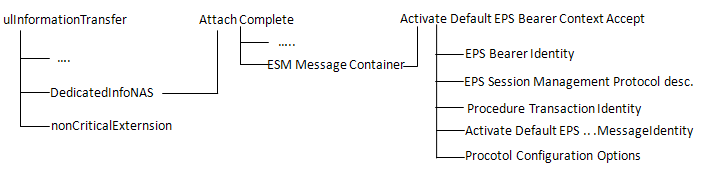
RRC_LTE:UL-DCCH-Message UL-DCCH-Message ::= SEQUENCE +-message ::= CHOICE [c1] +-c1 ::= CHOICE [ulInformationTransfer] +-ulInformationTransfer ::= SEQUENCE +-criticalExtensions ::= CHOICE [c1] +-c1 ::= CHOICE [ulInformationTransfer-r8] +-ulInformationTransfer-r8 ::= SEQUENCE [0] +-dedicatedInfoType ::= CHOICE [dedicatedInfoNAS] | +-dedicatedInfoNAS ::= OCTET STRING SIZE(ALIGNED) [074300035200C2] +-nonCriticalExtension ::= SEQUENCE OPTIONAL:Omit
If you decode dedicatedInfoNAS ::= OCTET STRING SIZE(ALIGNED) [074300035200C2], you will get the following message(Attach Complete).
NAS_LTE:EMM,Attach complete Attach complete ::= DIVISION +-Security header type ::= V | +-Security header type ::= CHOICE [Plain NAS message, not security protected] +-EPS mobility management protocol discriminator ::= V | +-Protocol discriminator ::= PD [7] +-Attach complete message identity ::= V | +-Message type ::= MSG [43] +-ESM message container ::= LV-E +-Octet1-Octet2 ::= DIVISION | +-Length of ESM message container ::= LEN (0..65535) [3] +-Octet3- ::= DIVISION +-ESM message container contents ::= OCTETARRAY SIZE(0..65535) [5200C2]
If you decode ESM message container contents ::= OCTETARRAY SIZE(0..65535) [5200C2] part, you will get the following message (Activate default EPS bearer context accept).
NAS_LTE:ESM,Activate default EPS bearer context accept Activate default EPS bearer context accept ::= DIVISION +-EPS bearer identity ::= V | +-EPS bearer identity value ::= CHOICE [EPS bearer identity value 5] +-EPS session management protocol discriminator ::= V | +-Protocol discriminator ::= PD [2] +-Procedure transaction identity ::= V | +-Procedure transaction identity ::= CHOICE [No procedure transaction identity assigned] +-Activate default EPS bearer context accept message identity ::= V | +-Message type ::= MSG [C2] +-Protocol configuration options ::= TLV OPTIONAL:Omit +-Octet1 ::= DIVISION | +-Protocol configuration options IEI ::= IEI [27] +-Octet2 ::= DIVISION | +-Length of protocol config options contents ::= LEN (0..255) [0] +-Octet3 ::= DIVISION | +-ext ::= EXT1 [1] | +-spare ::= FIX [0] | +-Configuration protocol ::= CHOICE [PPP for use with IP PDP type] +-Octet4-Octet253 ::= DIVISION +-protocol config options contents ::= OCTETARRAY SIZE(0..250)
Same as step 6, but establishment cause gets different as shown below. It will be mt-Access or mo-Data depending on whether it is MT call or MO call.
RRC_LTE:UL-CCCH-Message UL-CCCH-Message ::= SEQUENCE +-message ::= CHOICE [c1] +-c1 ::= CHOICE [rrcConnectionRequest] +-rrcConnectionRequest ::= SEQUENCE +-criticalExtensions ::= CHOICE [rrcConnectionRequest-r8] +-rrcConnectionRequest-r8 ::= SEQUENCE +-ue-Identity ::= CHOICE [s-TMSI] | +-s-TMSI ::= SEQUENCE | +-mmec ::= BIT STRING SIZE(8) [00000001] | +-m-TMSI ::= BIT STRING SIZE(32) [00000000000000000000000000000001] +-establishmentCause ::= ENUMERATED [mt-Access] +-spare ::= BIT STRING SIZE(1) [0]
Refer to RRC Connection Setup
RRC : RRC Connection Setup Complete + NAS : Service Request
RRC_LTE:UL-DCCH-Message UL-DCCH-Message ::= SEQUENCE +-message ::= CHOICE [c1] +-c1 ::= CHOICE [rrcConnectionSetupComplete] +-rrcConnectionSetupComplete ::= SEQUENCE +-rrc-TransactionIdentifier ::= INTEGER (0..3) [0] +-criticalExtensions ::= CHOICE [c1] +-c1 ::= CHOICE [rrcConnectionSetupComplete-r8] +-rrcConnectionSetupComplete-r8 ::= SEQUENCE [00] +-selectedPLMN-Identity ::= INTEGER (1..6) [1] +-registeredMME ::= SEQUENCE OPTIONAL:Omit +-dedicatedInfoNAS ::= OCTET STRING SIZE(ALIGNED) [C7E00000] +-nonCriticalExtension ::= SEQUENCE OPTIONAL:Omit
If you decode dedicatedInfoNAS ::= OCTET STRING SIZE(ALIGNED) [C7E00000] part, you will get the following message (Service Request).
NAS_LTE:EMM,Service request Service request ::= DIVISION +-Security header type ::= V | +-Security header type ::= CHOICE [Security header for the SERVICE REQUEST message] +-EPS mobility management protocol discriminator ::= V | +-Protocol discriminator ::= PD [7] +-KSI and sequence number ::= V | +-Octet1 ::= DIVISION | +-KSI ::= CHOICE [no key is available] | +-Sequence number(short) ::= INT (0..31) [0] +-Message authentication code (short) ::= V +-Octet1 ::= DIVISION | +-Short MAC value ::= INT (0..255) [0] +-Octet2 ::= DIVISION +-Short MAC value(continued) ::= INT (0..255) [0]
Refer to RRC : Security Mode Command
Refer to RRC : Security Mode Complete
RRC : RRC Connection Reconfiguration + NAS : Activate Dedicated EPS Bearer Context Request
This is another 'RRC Connection Reconfiguration' message. But you would see some difference between this message and the message at step 15. You don't see any 'Attach Accept' part because you already went through 'attach' process during the registration. And now you created only 'Dedicated EPS Bearer'. Does this mean that you cannot use the 'Default EPS Bearer' you created at step 15) ? No.. the default Bearer is still alive once it is created during the registration. That's why you don't have to recreate the default EPS bearer at this step.
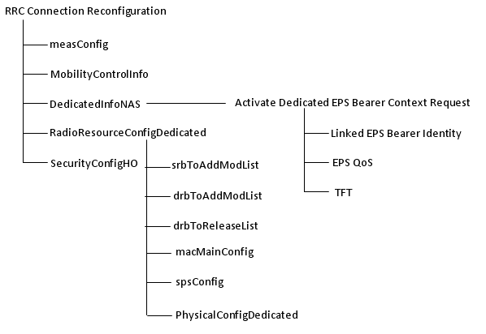
One think you would notice would be that 'Activate Dedicated EPS Bearer Context Request' does not have IP address setting. This is because Dedicated EPS is using the same IP configuration specified by Default EPS Bearer. The purpose of Default EPS bearer is to create a data pipe with a different QoS from Default EPS QoS. It means Dedicated EPS Bearer is linked to a specific Default EPS bearer. Then, how do we know which default EPS bearer is linked to which Dedicated EPS Bearer ? This link is specified by 'Linked EPS Bearer Identity'. For example, if 'Linked EPS Bearer Identity' is set to be 5. It means this 'Dedicated EPS Bearer' is linked to the Default EPS Bearer with Bearer ID = 5 and use the same IP configuration as defined in the default EPS bearer.
DL-DCCH-Message ::= SEQUENCE +-message ::= CHOICE [c1] +-c1 ::= CHOICE [rrcConnectionReconfiguration] +-rrcConnectionReconfiguration ::= SEQUENCE +-rrc-TransactionIdentifier ::= INTEGER (0..3) [0] +-criticalExtensions ::= CHOICE [c1] +-c1 ::= CHOICE [rrcConnectionReconfiguration-r8] +-rrcConnectionReconfiguration-r8 ::= SEQUENCE [001100] +-measConfig ::= SEQUENCE OPTIONAL:Omit +-mobilityControlInfo ::= SEQUENCE OPTIONAL:Omit +-dedicatedInfoNASList ::= SEQUENCE OF SIZE(1..maxDRB[11]) [1] OPTIONAL:Exist | +-DedicatedInfoNAS ::= OCTET STRING SIZE(ALIGNED) [1700000000036200C5050904686848480000000006213100023011] +-radioResourceConfigDedicated ::= SEQUENCE [110101] OPTIONAL:Exist | +-srb-ToAddModList ::= SEQUENCE OF SIZE(1..2) [1] OPTIONAL:Exist | | +-SRB-ToAddMod ::= SEQUENCE [11] | | +-srb-Identity ::= INTEGER (1..2) [2] | | +-rlc-Config ::= CHOICE [defaultValue] OPTIONAL:Exist | | | +-defaultValue ::= NULL | | +-logicalChannelConfig ::= CHOICE [defaultValue] OPTIONAL:Exist | | +-defaultValue ::= NULL | +-drb-ToAddModList ::= SEQUENCE OF SIZE(1..maxDRB[11]) [2] OPTIONAL:Exist | | +-DRB-ToAddMod ::= SEQUENCE [11111] | | | +-eps-BearerIdentity ::= INTEGER (0..15) [5] OPTIONAL:Exist | | | +-drb-Identity ::= INTEGER (1..32) [1] | | | +-pdcp-Config ::= SEQUENCE [101] OPTIONAL:Exist | | | | +-discardTimer ::= ENUMERATED [infinity] OPTIONAL:Exist | | | | +-rlc-AM ::= SEQUENCE OPTIONAL:Omit | | | | +-rlc-UM ::= SEQUENCE OPTIONAL:Exist | | | | | +-pdcp-SN-Size ::= ENUMERATED [len12bits] | | | | +-headerCompression ::= CHOICE [notUsed] | | | | +-notUsed ::= NULL | | | +-rlc-Config ::= CHOICE [um-Bi-Directional] OPTIONAL:Exist | | | | +-um-Bi-Directional ::= SEQUENCE | | | | +-ul-UM-RLC ::= SEQUENCE | | | | | +-sn-FieldLength ::= ENUMERATED [size10] | | | | +-dl-UM-RLC ::= SEQUENCE | | | | +-sn-FieldLength ::= ENUMERATED [size10] | | | | +-t-Reordering ::= ENUMERATED [ms50] | | | +-logicalChannelIdentity ::= INTEGER (3..10) [3] OPTIONAL:Exist | | | +-logicalChannelConfig ::= SEQUENCE [1] OPTIONAL:Exist | | | +-ul-SpecificParameters ::= SEQUENCE [1] OPTIONAL:Exist | | | +-priority ::= INTEGER (1..16) [13] | | | +-prioritisedBitRate ::= ENUMERATED [infinity] | | | +-bucketSizeDuration ::= ENUMERATED [ms100] | | | +-logicalChannelGroup ::= INTEGER (0..3) [2] OPTIONAL:Exist | | +-DRB-ToAddMod ::= SEQUENCE [11111] | | +-eps-BearerIdentity ::= INTEGER (0..15) [6] OPTIONAL:Exist | | +-drb-Identity ::= INTEGER (1..32) [2] | | +-pdcp-Config ::= SEQUENCE [101] OPTIONAL:Exist | | | +-discardTimer ::= ENUMERATED [infinity] OPTIONAL:Exist | | | +-rlc-AM ::= SEQUENCE OPTIONAL:Omit | | | +-rlc-UM ::= SEQUENCE OPTIONAL:Exist | | | | +-pdcp-SN-Size ::= ENUMERATED [len12bits] | | | +-headerCompression ::= CHOICE [notUsed] | | | +-notUsed ::= NULL | | +-rlc-Config ::= CHOICE [um-Bi-Directional] OPTIONAL:Exist | | | +-um-Bi-Directional ::= SEQUENCE | | | +-ul-UM-RLC ::= SEQUENCE | | | | +-sn-FieldLength ::= ENUMERATED [size10] | | | +-dl-UM-RLC ::= SEQUENCE | | | +-sn-FieldLength ::= ENUMERATED [size10] | | | +-t-Reordering ::= ENUMERATED [ms50] | | +-logicalChannelIdentity ::= INTEGER (3..10) [4] OPTIONAL:Exist | | +-logicalChannelConfig ::= SEQUENCE [1] OPTIONAL:Exist | | +-ul-SpecificParameters ::= SEQUENCE [1] OPTIONAL:Exist | | +-priority ::= INTEGER (1..16) [13] | | +-prioritisedBitRate ::= ENUMERATED [infinity] | | +-bucketSizeDuration ::= ENUMERATED [ms100] | | +-logicalChannelGroup ::= INTEGER (0..3) [3] OPTIONAL:Exist | +-drb-ToReleaseList ::= SEQUENCE OF OPTIONAL:Omit | +-mac-MainConfig ::= CHOICE [explicitValue] OPTIONAL:Exist | | +-explicitValue ::= SEQUENCE [111] | | +-ul-SCH-Config ::= SEQUENCE [11] OPTIONAL:Exist | | | +-maxHARQ-Tx ::= ENUMERATED [n5] OPTIONAL:Exist | | | +-periodicBSR-Timer ::= ENUMERATED [sf20] OPTIONAL:Exist | | | +-retxBSR-Timer ::= ENUMERATED [sf320] | | | +-ttiBundling ::= BOOLEAN [FALSE] | | +-drx-Config ::= CHOICE [release] OPTIONAL:Exist | | | +-release ::= NULL | | +-timeAlignmentTimerDedicated ::= ENUMERATED [infinity] | | +-phr-Config ::= CHOICE [setup] OPTIONAL:Exist | | +-setup ::= SEQUENCE | | +-periodicPHR-Timer ::= ENUMERATED [sf500] | | +-prohibitPHR-Timer ::= ENUMERATED [sf200] | | +-dl-PathlossChange ::= ENUMERATED [dB3] | +-sps-Config ::= SEQUENCE OPTIONAL:Omit | +-physicalConfigDedicated ::= SEQUENCE [0000110010] OPTIONAL:Exist | +-pdsch-ConfigDedicated ::= SEQUENCE OPTIONAL:Omit | +-pucch-ConfigDedicated ::= SEQUENCE OPTIONAL:Omit | +-pusch-ConfigDedicated ::= SEQUENCE OPTIONAL:Omit | +-uplinkPowerControlDedicated ::= SEQUENCE OPTIONAL:Omit | +-tpc-PDCCH-ConfigPUCCH ::= CHOICE [setup] OPTIONAL:Exist | | +-setup ::= SEQUENCE | | +-tpc-RNTI ::= BIT STRING SIZE(16) [0000001111111111] | | +-tpc-Index ::= CHOICE [indexOfFormat3] | | +-indexOfFormat3 ::= INTEGER (1..15) [1] | +-tpc-PDCCH-ConfigPUSCH ::= CHOICE [setup] OPTIONAL:Exist | | +-setup ::= SEQUENCE | | +-tpc-RNTI ::= BIT STRING SIZE(16) [0000000111111010] | | +-tpc-Index ::= CHOICE [indexOfFormat3] | | +-indexOfFormat3 ::= INTEGER (1..15) [1] | +-cqi-ReportConfig ::= SEQUENCE OPTIONAL:Omit | +-soundingRS-UL-ConfigDedicated ::= CHOICE OPTIONAL:Omit | +-antennaInfo ::= CHOICE [defaultValue] OPTIONAL:Exist | | +-defaultValue ::= NULL | +-schedulingRequestConfig ::= CHOICE OPTIONAL:Omit +-securityConfigHO ::= SEQUENCE OPTIONAL:Omit +-nonCriticalExtension ::= SEQUENCE OPTIONAL:Omit
Activate dedicated EPS bearer context request ::= DIVISION +-EPS bearer identity ::= V | +-EPS bearer identity value ::= CHOICE [EPS bearer identity value 6] +-EPS session management protocol discriminator ::= V | +-Protocol discriminator ::= PD [2] +-Procedure transaction identity ::= V | +-Procedure transaction identity ::= CHOICE [No procedure transaction identity assigned] +-Activate dedicated EPS bearer context request message identity ::= V | +-Message type ::= MSG [C5] +-Spare half octet ::= V | +-Spare half octet ::= FIX [0] +-Linked EPS bearer identity ::= V | +-Linked EPS bearer identity value ::= CHOICE [EPS bearer identity value 5] +-EPS QoS ::= LV | +-Octet1 ::= DIVISION | | +-Length of EPS quality of service contents ::= LEN (0..255) [9] | +-Octet2 ::= DIVISION | | +-QCI ::= CHOICE [QCI 4] | +-Octet3 ::= DIVISION | | +-Maximum bit rate for uplink ::= CHOICE [384kbps] | +-Octet4 ::= DIVISION | | +-Maximum bit rate for downlink ::= CHOICE [384kbps] | +-Octet5 ::= DIVISION | | +-Guaranteed bit rate for uplink ::= CHOICE [128kbps] | +-Octet6 ::= DIVISION | | +-Guaranteed bit rate for downlink ::= CHOICE [128kbps] | +-Octet7 ::= DIVISION | | +-Maximum bit rate for uplink (extended) ::= CHOICE [Use the value indicated by the maximum bit rate for uplink in octet 4] | +-Octet8 ::= DIVISION | | +-Maximum bit rate for downlink (extended) ::= CHOICE [Use the value indicated by the maximum bit rate for uplink in octet 4] | +-Octet9 ::= DIVISION | | +-Guaranteed bit rate for uplink (extended) ::= CHOICE [Use the value indicated by the guaranteed bit rate for uplink in octet 6] | +-Octet10 ::= DIVISION | +-Guaranteed bit rate for downlink (extended) ::= CHOICE [Use the value indicated by the guaranteed bit rate for uplink in octet 6] +-TFT ::= LV | +-Octet1 ::= DIVISION | | +-Length of traffic flow template IE ::= LEN (0..255) [6] | +-Octet2 ::= DIVISION | | +-TFT operation code ::= CHOICE [Create new TFT] | | +-E bit ::= CHOICE [parameters list is not included] | | +-Number of packet filters ::= INT (0..15) [1] | +-Octet3-Octet256 ::= DIVISION | +-Packet filter list/Parameters list ::= OCTETARRAY SIZE(0..254) [3100023011] +-Transaction identifier ::= TLV OPTIONAL:Omit | +-Octet1 ::= DIVISION | | +-Transaction identifier IEI ::= IEI [5D] | +-Octet2 ::= DIVISION | | +-Length of Transaction identifier contents ::= LEN (0..255) [0] | +-Octet3 ::= DIVISION | | +-TI flag ::= CHOICE [The message is sent from the side that originates the TI] | | +-TIO ::= CHOICE [TI value 0] | | +-Spare ::= FIX [0] | +-Octet4 ::= DIVISION | +-ext ::= EXT (0..1) [1] | +-TIE ::= CHOICE [Reserved] +-Negotiated QoS ::= TLV OPTIONAL:Omit | +-Octet1 ::= DIVISION | | +-Quality of service IEI ::= IEI [30] | +-Octet2 ::= DIVISION | | +-Length of quality of service IE ::= LEN (0..255) [0] | +-Octet3 ::= DIVISION | | +-spare ::= FIX [0] | | +-Delay class ::= CHOICE [Subscribed delay class(MS to network direction)/Reserved(network to MS direction)] | | +-Reliability class ::= CHOICE [Subscribed reliability class(MS to network direction)/Reserved(network to MS direction)] | +-Octet4 ::= DIVISION | | +-Peak throughput ::= CHOICE [Subscribed peak throughput(MS to network direction)/Reserved(network to MS direction)] | | +-spare ::= FIX [0] | | +-Precedence class ::= CHOICE [Subscribed precedence(MS to network direction)/Reserved(network to MS direction)] | +-Octet5 ::= DIVISION | | +-spare ::= FIX [0] | | +-Mean throughput ::= CHOICE [Subscribed mean throughput(MS to network direction)/Reserved(network to MS direction)] | +-Octet6 ::= DIVISION | | +-Traffic Class ::= CHOICE [Subscribed traffic class(MS to network direction)/Reserved(network to MS direction)] | | +-Delivery order ::= CHOICE [Subscribed delivery order(MS to network direction)/Reserved(network to MS direction)] | | +-Delivery of erroneous SDUs ::= CHOICE [Subscribed delivery of erroneous SDUs(MS to network direction)/Reserved(network to MS direction)] | +-Octet7 ::= DIVISION | | +-Maximum SDU size ::= CHOICE [Subscribed maximum SDU size(MS to network direction)/Reserved(network to MS direction)] | +-Octet8 ::= DIVISION | | +-Maximum bit rate for uplink ::= CHOICE [Subscribed maximum bit rate for uplink(MS to network direction)/Reserved(network to MS direction)] | +-Octet9 ::= DIVISION | | +-Maximum bit rate for downlink ::= CHOICE [Subscribed maximum bit rate for uplink(MS to network direction)/Reserved(network to MS direction)] | +-Octet10 ::= DIVISION | | +-Residual BER ::= CHOICE [Subscribed residual BER(MS to network direction)/Reserved(network to MS direction)] | | +-SDU error ratio ::= CHOICE [Subscribed SDU error ratio(MS to network direction)/Reserved(network to MS direction)] | +-Octet11 ::= DIVISION | | +-Transfer delay ::= CHOICE [Subscribed transfer delay(MS to network direction)/Reserved(network to MS direction)] | | +-Traffic Handling priority ::= CHOICE [Subscribed traffic handling priority(MS to network direction)/Reserved(network to MS direction)] | +-Octet12 ::= DIVISION | | +-Guaranteed bit rate for uplink ::= INT (0..255) [0] | +-Octet13 ::= DIVISION | | +-Guaranteed bit rate for downlink ::= INT (0..255) [0] | +-Octet14 ::= DIVISION | | +-Spare ::= FIX [0] | | +-Signalling Indication ::= CHOICE [Not optimised for signalling traffic] | | +-Source Statistics Descriptor ::= CHOICE [unknown] | +-Octet15 ::= DIVISION | | +-Maximum bit rate for downlink (extended) ::= CHOICE [Use the value indicated by the Maximum bit rate for downlink in octet 9.] | +-Octet16 ::= DIVISION | | +-Guaranteed bit rate for downlink (extended) ::= CHOICE [Use the value indicated by the Maximum bit rate for downlink in octet 9.] | +-Octet17 ::= DIVISION | | +-Maximum bit rate for uplink (extended) ::= CHOICE [Use the value indicated by the Maximum bit rate for downlink in octet 9.] | +-Octet18 ::= DIVISION | +-Guaranteed bit rate for uplink (extended) ::= CHOICE [Use the value indicated by the Maximum bit rate for downlink in octet 9.] +-Negotiated LLC SAPI ::= TV OPTIONAL:Omit | +-Octet1 ::= DIVISION | | +-LLC SAPI IEI ::= IEI [32] | +-Octet2 ::= DIVISION | +-Spare ::= FIX [0] | +-LLC SAPI value ::= CHOICE [LLC SAPI not assigned] +-Radio priority ::= TV OPTIONAL:Omit | +-Octet1 ::= DIVISION | +-Radio priority IEI ::= IEI [8-] | +-spare ::= FIX [0] | +-Radio priority level value ::= CHOICE [priority level 1 (highest)] +-Packet flow identifier ::= TLV OPTIONAL:Omit | +-Octet1 ::= DIVISION | | +-Packet Flow Identifier IEI ::= IEI [34] | +-Octet2 ::= DIVISION | | +-Length of Packet Flow Identifier IE ::= LEN (0..255) [0] | +-Octet3 ::= DIVISION | +-spare ::= FIX [0] | +-Packet Flow Identifier value ::= CHOICE [Best Effort] +-Protocol configuration options ::= TLV OPTIONAL:Omit +-Octet1 ::= DIVISION | +-Protocol configuration options IEI ::= IEI [27] +-Octet2 ::= DIVISION | +-Length of protocol config options contents ::= LEN (0..255) [0] +-Octet3 ::= DIVISION | +-ext ::= EXT1 [1] | +-spare ::= FIX [0] | +-Configuration protocol ::= CHOICE [PPP for use with IP PDP type] +-Octet4-253 ::= DIVISION +-protocol config options contents ::= OCTETARRAY SIZE(0..250)
RRC : RRC Connection Reconfiguration Complete + NAS : Activate Dedicated EPS Bearer Context Accept
RRC Connection Reconfiguration Complete part is very simple as shown below.
RRC_LTE:UL-DCCH-Message UL-DCCH-Message ::= SEQUENCE +-message ::= CHOICE [c1] +-c1 ::= CHOICE [rrcConnectionReconfigurationComplete] +-rrcConnectionReconfigurationComplete ::= SEQUENCE +-rrc-TransactionIdentifier ::= INTEGER (0..3) [0] +-criticalExtensions ::= CHOICE [rrcConnectionReconfigurationComplete-r8] +-rrcConnectionReconfigurationComplete-r8 ::= SEQUENCE [0] +-nonCriticalExtension ::= SEQUENCE OPTIONAL:Omit
ESM,Activate dedicated EPS bearer context accept part is carried by UL information transfer message as follows.
RRC_LTE:UL-DCCH-Message UL-DCCH-Message ::= SEQUENCE +-message ::= CHOICE [c1] +-c1 ::= CHOICE [ulInformationTransfer] +-ulInformationTransfer ::= SEQUENCE +-criticalExtensions ::= CHOICE [c1] +-c1 ::= CHOICE [ulInformationTransfer-r8] +-ulInformationTransfer-r8 ::= SEQUENCE [0] +-dedicatedInfoType ::= CHOICE [dedicatedInfoNAS] | +-dedicatedInfoNAS ::= OCTET STRING SIZE(ALIGNED) [6200C6] +-nonCriticalExtension ::= SEQUENCE OPTIONAL:Omit
If you decode dedicatedInfoNAS ::= OCTET STRING SIZE(ALIGNED) [6200C6] part, you will get the following message(ESM,Activate dedicated EPS bearer context accept)
NAS_LTE:ESM,Activate dedicated EPS bearer context accept Activate dedicated EPS bearer context accept ::= DIVISION +-EPS bearer identity ::= V | +-EPS bearer identity value ::= CHOICE [EPS bearer identity value 6] +-EPS session management protocol discriminator ::= V | +-Protocol discriminator ::= PD [2] +-Procedure transaction identity ::= V | +-Procedure transaction identity ::= CHOICE [No procedure transaction identity assigned] +-Activate dedicated EPS bearer context accept message identity ::= V | +-Message type ::= MSG [C6] +-Protocol configuration options ::= TLV OPTIONAL:Omit +-Octet1 ::= DIVISION | +-Protocol configuration options IEI ::= IEI [27] +-Octet2 ::= DIVISION | +-Length of protocol config options contents ::= LEN (0..255) [0] +-Octet3 ::= DIVISION | +-ext ::= EXT1 [1] | +-spare ::= FIX [0] | +-Configuration protocol ::= CHOICE [PPP for use with IP PDP type] +-Octet4-Octet253 ::= DIVISION +-protocol config options contents ::= OCTETARRAY SIZE(0..250)
|